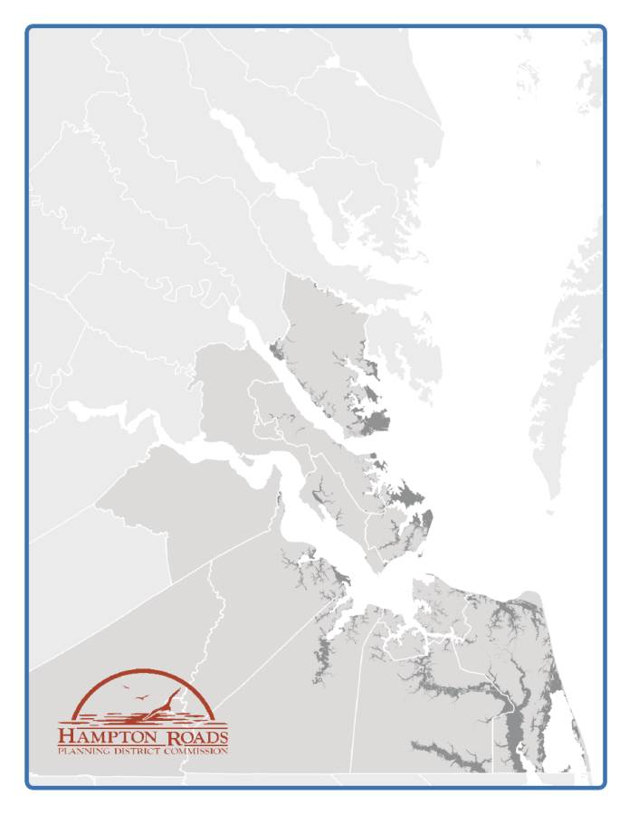
Climate Change in
Hampton Roads
Climate Change in
Hampton Roads
Impacts and Stakeholder Involvement
Impacts and Stakeholder Involvement
February 2010
PEP10-02

H
AMPTON
R
OADS
P
LANNING
D
ISTRICT
C
OMMISSION
C
HESAPEAKE
P
OQUOSON
A
MAR DWARKANATH
*
J.
R
ANDALL WHEELER
W
ILLIAM
E.
H
ARRELL
G
ORDON
C.
H
ELSEL
,
J
R
.
C
LIFTON
E.
H
AYES
,
J
R
.
*
A
LAN
P.
K
RASNOFF
P
ORTSMOUTH
E
LLA
P.
W
ARD
K
ENNETH
L.
C
HANDLER
*
D
OUGLAS
L.
S
MITH
F
RANKLIN
*
J
UNE
F
LEMING
S
OUTHAMPTON
C
OUNTY
R
OSA
M.
L
AWRENCE
A
NITA
T.
F
ELTS
*
M
ICHAEL
W.
J
OHNSON
G
LOUCESTER
C
OUNTY
*
B
RENDA
G.
G
ARTON
S
UFFOLK
G
REGORY
W
OODARD
*
S
ELENA
C
UFFEE
-G
LENN
L
INDA
T.
J
OHNSON
H
AMPTON
M
ARY
B
UNTING
S
URRY
C
OUNTY
R
OSS
A.
K
EARNEY
*
T
YRONE
W.
F
RANKLIN
*
M
OLLY
J
OSEPH
W
ARD
J
OHN
M.
S
EWARD
I
SLE OF
W
IGHT
C
OUNTY
V
IRGINIA
B
EACH
W.
D
OUGLAS
C
ASKEY
H
ARRY
E.
D
IEZEL
*
S
TAN
D.
C
LARK
R
OBERT
M.
D
YER
B
ARBARA
M.
H
ENLEY
J
AMES
C
ITY
C
OUNTY
L
OUIS
R.
J
ONES
*
B
RUCE
C.
G
OODSON
*
W
ILLIAM
D.
S
ESSOMS
S
ANFORD
B.
W
ANNER
J
AMES
K.
S
PORE
J
OHN
E.
U
HRIN
N
EWPORT
N
EWS
*
J
OE
S.
F
RANK
W
ILLIAMSBURG
N
EIL
A.
M
ORGAN
J
ACKSON
C.
T
UTTLE
,
II
S
HARON
P.
S
COTT
*
J
EANNE
Z
EIDLER
N
ORFOLK
Y
ORK
C
OUNTY
A
NTHONY
L.
B
URFOOT
*
J
AMES
O.
M
C
R
EYNOLDS
*
P
AUL
D.
F
RAIM
T
HOMAS
G.
S
HEPPERD
,
J
R
.
D
R
.
T
HERESA
W.
W
HIBLEY
R
EGINA
V.K.
W
ILLIAMS
B
ARCLAY
C.
W
INN
*E
XECUTIVE
C
OMMITTEE
M
EMBER
P
ROJECT
S
TAFF
D
WIGHT
L.
F
ARMER
E
XECUTIVE
D
IRECTOR
/S
ECRETARY
J
OHN
M.
C
ARLOCK
HRPDC
D
EPUTY
E
XECUTIVE
D
IRECTOR
E
RIC
J.
W
ALBERG
P
HYSICAL
&
E
NVIRONMENTAL
P
LANNING ADMINISTRATOR
S
ARA
J.
K
IDD
S
ENIOR
E
NVIRONMENTAL
P
LANNER
B
ENJAMIN
J.
M
C
F
ARLANE
P
HYSICAL AND
E
NVIRONMENTAL
P
LANNER
F
RANCES
D.
H
UGHEY
A
DMINISTRATIVE
A
SSISTANT
R
OBERT
C.
J
ACOBS
G
ENERAL
S
ERVICES
M
ANAGER
M
ICHAEL
R.
L
ONG
A
SSISTANT
G
ENERAL
S
ERVICES
M
ANAGER
B
RIAN
M
ILLER
C
OMMUNICATIONS
D
ESIGNER
C
HRISTOPHER
W.
V
AIGNEUR
R
EPROGRAPHIC
C
OORDINATOR
C
LIMATE
C
HANGE IN
H
AMPTON
R
OADS
:
I
MPACTS AND
S
TAKEHOLDER
I
NVOLVEMENT
This report was funded, in part, by the Virginia Coastal Zone Management Program
at the Virginia Department of Environmental Quality through
Grant #NA08NOS4190466 of the U.S Department of Commerce,
National Oceanic and Atmospheric Administration,
under the Coastal Zone Management Act of 1972, as amended.
The views expressed herein are those of the authors and do not necessarily reflect the
views of the U.S Department of Commerce, NOAA or any of its subagencies.
Federal financial assistance to this project amounted to $40,000,
approximately 50% of the total cost.
Preparation of this report was included in the HRPDC Unified
Planning Work Program for FY 2008 - 2009, approved by the
Commission at its Executive Committee Meeting of
March 19, 2008 and in the HRPDC Unified
Planning Work Program for FY 2009 - 2010, approved by the
Commission at its Executive Committee Meeting of
June 17, 2009.
Prepared by the staff of the
Hampton Roads Planning District Commission
FEBRUARY 2010
R
EPORT
D
OCUMENTATION
TITLE:
REPORT DATE
Climate Change in Hampton Roads:
Impacts and Stakeholder Involvement
February 2010
GRANT/SPONSORING AGENCY
DEQ/NOAA/LOCAL FUNDS
AUTHORS:
ORGANIZATION NAME,
Benjamin J. McFarlane
ADDRESS AND TELEPHONE
Eric J. Walberg, AICP
Hampton Roads Planning
District Commission
723 Woodlake Drive
Chesapeake, Virginia 23320
(757)420-8300
http://www.hrpdcva.gov
ABSTRACT
This report provides an overview of the potential impacts of climate change on the Hampton
Roads region and describes various mitigation and adaptation strategies that can be taken to
reduce and prevent damage from climate change impacts. The report contains seven major
sections. The first two sections introduce climate change and describe its impacts. The third
section provides a brief analysis of the impacts of climate change on Hampton Roads’ natural
resources. The fourth section describes various strategies for mitigating and adapting to the
impacts of climate change. The fifth section describes the efforts of other regions and cities to
develop climate change strategies. The sixth section describes HRPDC efforts to involve local
stakeholders, including developing a regional cooperative framework for addressing climate
change. The final section describes lessons learned and next steps.
ACKNOWLEDGEMENTS
This report was funded, in part, by the Virginia Coastal Zone Management Program at the
Virginia Department of Environmental Quality through Grant #NA08NOS4190466
from the U.S.
Department of Commerce, National Oceanic and Atmospheric Administration, under the Coastal
Zone Management Act of 1972, as amended. The views expressed herein are those of the authors
and do not necessarily reflect the views of the U.S. Department of Commerce, NOAA, or any of its
sub-agencies.
This report was prepared by the Hampton Roads Planning District Commission (HRPDC) staff in
cooperation with the member localities. Preparation of this report was included in the HRPDC
Unified Planning Work Program for fiscal year 2008 – 2009, approved by the Commission at its
Executive Committee Meeting of March 19, 2008, and in the HRPDC Unified Planning Work
Program for fiscal year 2009 – 2010, approved by the Commission at its Executive Committee
Meeting of June 17, 2009.

Climate Change in Hampton Roads: Impacts and Stakeholder Involvement
ii
L
IST OF
F
IGURES
Figure 1: Hampton Roads, Virginia ....................................................................................................... 3
Figure 2: Historic Sea Level Rise at Sewell's Point Virginia, 1927-2006 .............................................. 6
Figure 3: Storm Surge in Hampton Roads ............................................................................................ 8
Figure 4: Initial Conditions Mobjack Bay, Virginia ............................................................................ 16
Figure 5: 39-cm (1.28 ft) Sea Level Rise by 2100 Mobjack Bay, Virginia ............................................ 17
Figure 6: 1-m (3.28 ft) Sea Level Rise by 2100 Mobjack Bay, Virginia ................................................ 18
Figure 7: Land Cover Loss and Change due to Sea Level Rise (SLR), Mobjack Bay, Virginia ........... 19
Figure 8: Initial Conditions South Hampton Roads, Virginia ........................................................... 20
Figure 9: 39-cm (1.28 ft) Sea Level Rise by 2100 South Hampton Roads, Virginia............................ 20
Figure 10: 1-m (3.28 ft) Sea Level Rise by 2100 South Hampton Roads, Virginia ............................... 21
Figure 11: Land Cover Loss and Change due to Sea Level Rise (SLR), South Hampton Roads,
Virginia ................................................................................................................................................ 22
Figure 12: Storm Surge Inundation of Green Infrastructure in Hampton Roads .............................. 23
Figure 13: Initial Conditions, Virginia Beach, Virginia ...................................................................... 24
Figure 14: Conservation Corridors, Virginia Beach, Virginia ............................................................ 25
Figure 15: Hurricane Isabel flood risk, Virginia Beach, Virginia ........................................................ 25
Figure 16: Hurricane Isabel flood risk +0.5m SLR, Virginia Beach, Virginia ..................................... 26
Figure 17: Hurricane Isabel flood risk +1.0m SLR, Virginia Beach, Virginia ...................................... 26
Figure 18: Hurricane Isabel flood risk +1.5m SLR, Virginia Beach, Virginia ...................................... 27
Figure 19: Hurricane Isabel flood risk +2.0m SLR, Virginia Beach, Virginia ..................................... 27

Climate Change in Hampton Roads: Impacts and Stakeholder Involvement
1
I
NTRODUCTION
Climate change has become one of the
dominant news stories of the last decade.
Projections of temperature increases and
rising sea levels are made by scientific
organizations and researchers. Nations’
representatives met in Copenhagen in
December 2009 to discuss what could be
done to mitigate climate change (Zeller,
2009). These talks resulted in an accord that
was seen as “a modest step” toward
addressing climate change, but that did not
contain firm targets for reductions of
greenhouse gas emissions. (Revkin & Broder,
2009) The agreement included commitments
to reduce emissions, help developing nations
reduce emissions through clean energy, and
provide aid to vulnerable countries for
climate change adaptation. Organizations
such as the National Wildlife Foundation, the
Pew Environmental Group, and the National
Science Foundation have added to the
research by governmental organizations such
as the Intergovernmental Panel on Climate
Change and the U.S. Climate Change Science
Program. Their findings show that our
climate is changing. The earth is warming at
an increasing rate, and it is primarily due to
human activities such as the burning of fossil
fuels and the clearing of forests (Karl, Melillo,
& Peterson, 2009). Observations have shown
a significant increase in global average
temperature over the last century. In
addition, global average sea level has
increased. Other significant observed changes
include decreases in snow and icepacks,
altered precipitation patterns, and a decrease
in the frequency of cold days along with an
increase in the frequency of hot days.
Changes to local climates have occurred and
are occurring across the globe.
Climate change will likely result in several
significant adverse impacts on Hampton
Roads including inundation and flooding of
both developed and natural areas due to sea
level rise, increased impacts from severe
weather events and associated storm surge,
and ecological damage to coastal and marine
ecosystems due to temperature increase and
loss of wetlands habitat. Many of these
impacts are already occurring, and they will
continue to increase over the next century.
Rising sea levels are of principle concern to
the region (Fahrenthold, 2008). The full
extent of these impacts will not be realized
for several decades at least; however, the root
causes of climate change and the long lead
times required to enact policy change or
construct infrastructure demand a planning
response in the present. “While it is unlikely
Virginia will see drastic changes in the next
few years, advance planning is recommended,
given the scale of many adaptation efforts and
the risks associated with being unprepared
for key impacts,” (Governor's Commission on
Climate Change, 2008). Planning for climate
change now may help mitigate its impacts
while also reducing the costs of any necessary
adaptation. The focus of this document is on
identifying what the impacts of climate
change are likely to be for the Hampton
Roads region, and developing a framework for
responding to climate change through
regional cooperation.
Climate change will be one of the greatest
challenges for Hampton Roads, the United
States, and the world to deal with over the
next century. Climate change is already
occurring and will continue to have large
impacts on populations around the world.
Responding to these impacts and their
threatened increase will require both
mitigation and adaptation. However, despite
the possible dangers of climate change it also
presents an opportunity for positive change
and development. Wind energy development
represents one such as yet untapped
opportunity for Hampton Roads, while the
Planning for climate
change now may help
mitigate its impacts
while also reducing
the costs of any
necessary adaptation.
Climate Change in Hampton Roads: Impacts and Stakeholder Involvement
2
expansion of existing modeling and
simulation capabilities to climate change
impacts is an opportunity where the capacity
and ability already exist.
The report contains seven major sections. The
first section describes climate change in
general terms. The second section describes
the impacts of climate change on the
Hampton Roads region and to specific
sectors. The third section provides a basic
analysis of the impacts of climate change on a
specific sector, natural resources. The fourth
section describes various strategies for
mitigating and adapting to the impacts of
climate change. The fifth section describes
the attempts of other regions and cities to
develop climate change strategies. The sixth
section describes efforts undertaken by
HRPDC to involve local stakeholders in
planning for climate change. The final section
describes future steps for the project and for
regional action.
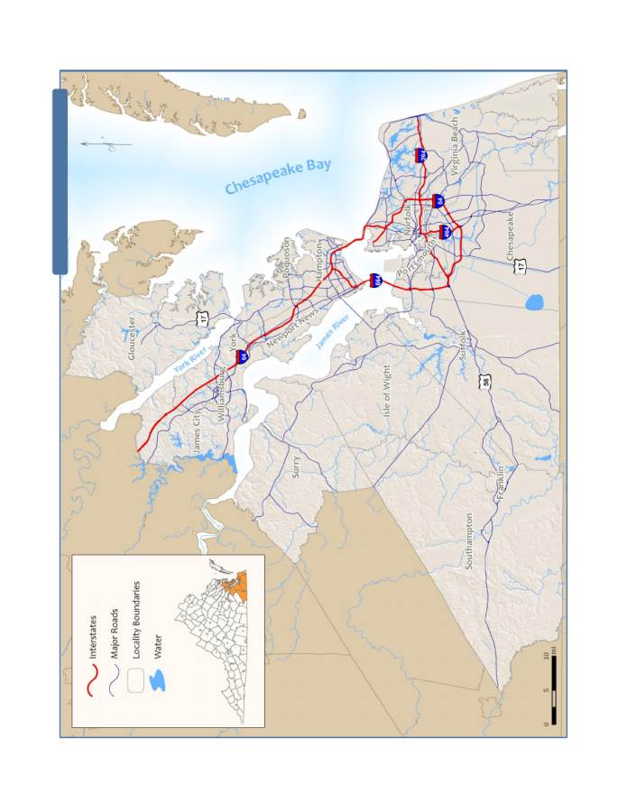
C
lim
at
e
C
ha
ng
e
in
H
am
pt
on
R
oa
ds
: I
m
pa
ct
s
an
d
St
ak
eh
ol
de
r I
nv
ol
ve
m
en
t
3
Fi
gu
re
1:
H
am
pt
on
R
oa
ds
, V
ir
gi
ni
a
Cr
ea
te
d
by
th
e
H
am
pto
n
Ro
ad
s
Pl
an
ni
ng
D
is
tr
ic
t C
om
m
is
si
on
Climate Change in Hampton Roads: Impacts and Stakeholder Involvement
4
W
HAT IS
C
LIMATE
C
HANGE
?
To understand how climate change impacts
human society requires an understanding of
what climate is and how it affects people and
environments. “Climate is the weather of a
particular region, averaged over a long period
of time,” and includes things such as the
temperature, precipitation, and wind
(National Science Foundation, 2009).
Weather varies from day to day, month to
month, and year to year. Climate averages the
weather over many years to describe the
general character of a region. Knowing these
past trends guides understanding of when
seasons occur and how warm or cold they are.
A region’s climate has broad impacts on many
of the human and natural activities that occur
within its boundaries. Plant and animal
species can survive only in a specific range for
which they have adapted over many years. As
climate changes those species will either have
to move to a more suitable climate or become
extinct. The greenhouse effect is one of the
main drivers of life on earth – it allows for life
to exist in its present form. It is caused by the
presence of various heat-trapping gases such
as carbon dioxide and water vapor in the
atmosphere. These gases are naturally present
in the atmosphere, but their quantities have
significantly increased since the mid-1700s,
mainly due to human activity. This increase
in greenhouse (or heat-trapping) gases will
change Earth’s climate more quickly and to a
greater extent than would otherwise occur
(Karl, Melillo, & Peterson, 2009).
Different organizations use different
definitions of climate change. The IPCC
defines climate change as “any change in
climate over time, whether due to natural
variability or as a result of human activity,”
(IPCC, 2007). While natural factors influence
climate most of the focus has been on human
influences and how they have increasingly
affected climate over the last half-century.
The increase in emissions of greenhouse gases
into the atmosphere through human
activities such as the burning of fossil fuels,
agriculture, and industrial processes has been
documented (Karl, Melillo, & Peterson, 2009).
The main greenhouse gases climate scientists
analyze are carbon dioxide, methane, nitrous
oxide, halocarbons, ozone, and water vapor.
Carbon dioxide is considered to be the major
contributor because of its sheer quantity,
even though other greenhouse gases have a
larger per-unit effect on atmospheric
temperature. Water vapor is recognized as
the most potent greenhouse gas, but human
activities do not cause much of an increase.
Instead, temperature increases resulting from
other greenhouse gas emissions result in
more water vapor because warmer air holds
more moisture, creating a warming
“feedback loop,” (Karl, Melillo, & Peterson,
2009). Other human influences on climate
include the use of aerosols and changes in
land cover to urban development and
agriculture. Other natural influences on
climate include the change of the Earth’s
orbit around the Sun and volcanic eruptions.
The impacts of global warming will depend
on its extent. This extent will be determined
by the quantity of greenhouse gases emitted
and how long those emissions are continued.
Warming will increase global average sea
level due to a combination of thermal
expansion, melting glaciers, and melting ice
sheets. Precipitation patterns will change.
The distribution of rainfall throughout the
year will also change; rainfall will be more
concentrated as heavy storm events are
punctuated by periods of drought. Average
temperature will increase, but so will the
number and temperature of extremely hot
days. Changes in temperature, water
availability, and water salinity will also force
changes in terrestrial and aquatic ecosystems.
“Climate is the
weather of a
particular region,
averaged over a long
period of time.”
- National Science
Foundation
Climate Change in Hampton Roads: Impacts and Stakeholder Involvement
5
Climate change will have effects that will
occur in the short, medium, and long
timeframes. Changes may be gradual early on
and more stark later. In addition, impacts
may not necessarily be observed in a linear
fashion; some impacts of climate change may
grow significantly more intense as thresholds
are crossed. The main effect of greenhouse
gas emissions will be to increase global
average temperatures. This temperature
increase will in turn lead to secondary effects
such as altered precipitation patterns and sea
level rise. Another effect of climate change
may be more intense storms, including
tropical storms. Storm surge will increase as
well due to a combination of sea level rise and
stronger storms (Karl, Melillo, & Peterson,
2009). Some of these effects may be blunted
by reducing greenhouse gas emissions and
thus mitigating some climate change, but
most will still be felt to some extent. Many of
the impacts of climate change will not be felt
for some time; these effects will lag behind
their causes. Additionally, many effects will
persist for years even if their causes are
eliminated. Even though some climate
change can still be mitigated, some
adaptation will be required at some point.
R
ISING
T
EMPERATURES
Greenhouse gas emissions are causing global
temperatures to rise. Higher temperatures
have already been observed, and the rate of
increase is expected to grow. Since 1900
global average temperature has increased by
approximately 1.5°F, but by 2100 it is projected
to increase by an additional 2 to 11.5°F (Karl,
Melillo, & Peterson, 2009). The United States
Global Change Research Program estimates
that temperatures in the Northeastern United
States will increase by 2.5 to 4.5°F in winter
and 1.5 to 3.5°F in summer, while
Southeastern states will see increases of
4.5 to 9°F (Karl, Melillo, & Peterson, 2009).
Average temperature increases will result in
stress placed on ecosystems and a variety of
impacts on human health and the built
environment. In addition to average
increases, increases in maximum observed
temperatures are also expected. Heat waves
are also likely to be more frequent and to last
longer. The Governor’s Commission on
Climate Change projected an average
temperature increase of 3.1°C (5.6°F) for
Virginia during the 21
st
century (Governor's
Commission on Climate Change, 2008).
C
HANGING
P
RECIPITATION
P
ATTERNS
Rising temperatures have the potential to
radically alter historic precipitation patterns,
affecting human settlements and the natural
environment at all scales (global, national,
and local).
Droughts are likely to increase
in frequency, intensity, and duration
(Karl, Melillo, & Peterson, 2009). At the
same time, storm events are expected to
increase in intensity, bringing larger
quantities of rainfall with the same or
fewer storm events. Stronger storms that
bring more rain will also have the potential to
cause more damage due to winds and
flooding. More intense hurricanes and
nor’easters will bring higher wind speeds,
more rainfall, and increased storm surge, all
of which will be exacerbated by sea level rise.
In addition, larger rainfall events will result in
more runoff and its resulting impacts on
waterways. More rainfall will have both
benefits and costs for the region, depending
on how its frequency is altered. The
Governor’s Commission on Climate Change,
using the same scenario as for temperature
increases, projected for Virginia an overall
precipitation increase of 11% by 2100
(Governor's Commission on Climate Change,
2008).
S
EA
L
EVEL
R
ISE
Global sea level rises due to increases in the
volume and quantity (or mass) of water in the
world’s oceans. Rising temperatures cause
Even though some
climate change can
still be mitigated,
some adaptation will
be required.
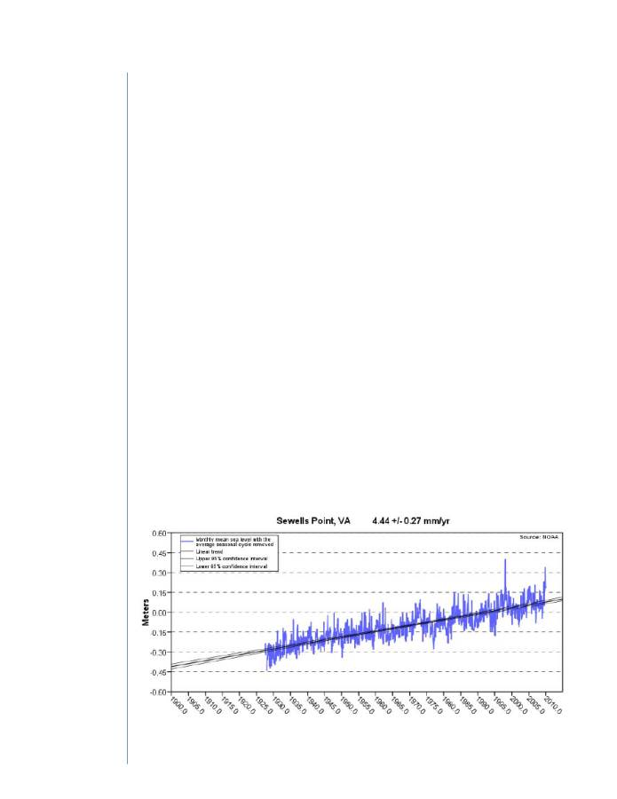
Climate Change in Hampton Roads: Impacts and Stakeholder Involvement
6
water to increase in volume due to thermal
expansion (CCSP, 2009). Sea level rise caused
by an increase in volume is referred to as
steric sea level rise. Rising temperatures also
cause more ice and snow to melt, adding to
the total amount of liquid water in the
oceans; this is referred to as a eustatic
increase. Both steric and eustatic sea level rise
are global phenomena. Sea level rise can be
affected locally by other factors such as land
subsidence. Subsidence can be caused by
sediment compaction or extraction of
subsurface liquids like water or oil. Because of
this local variation scientists refer to both
global and relative sea level rise. Global sea
level rise includes both steric and eustatic
factors. Relative sea level rise adds
regional factors such as land elevation
changes, winds, and currents. Global sea
level rise is now projected to be between 3
and 4 feet by 2100, under higher emissions
scenarios (Karl, Melillo, & Peterson, 2009).
This is greater than the level stated by the
IPCC, which was 8 inches to 2 feet, for two
reasons: more is now known about ice sheet
dynamics (which were not factored into the
IPCC’s calculations at the time), and observed
emissions have been higher than predicted by
the IPCC.
Land subsidence is a significant factor in
the rate of sea level rise in Hampton
Roads (CCSP, 2009). Several factors
contribute to land subsidence within the
region. First, Hampton Roads is located on a
passive continental margin, the trailing edge
of a tectonic plate that is creating gradual
subsidence of the land (Boon, Sea Coast and
Sea Level Trends, 2004). In addition, several
isostatic processes are at work. The second
factor is isostatic rebound, which is the result
of the retreat of glaciers following the end of
the last ice age. In the northern hemisphere
this phenomenon has caused land areas in
northern latitudes that were once covered in
ice to rise in elevation as the ice has melted.
To the south of the previously ice‐covered
areas, land that was once bowed upward by
the weight of the ice to the north is now
gradually subsiding as the bowing in the
earth’s crust is relieved. A third factor is the
removal of groundwater from aquifers under
the region. As the water is removed for
drinking water and other uses the aquifers
compress slightly, further contributing to
subsidence. The rate of subsidence varies
across the Hampton Roads region. In
general, land subsidence accounts for
between one‐third and one‐half of the
observed sea level rise in the region. The
Figure 2: Historic Sea Level Rise at Sewell's Point, Virginia, 1927‐2006
Source: (NOAA, 2008)
Climate Change in Hampton Roads: Impacts and Stakeholder Involvement
7
remaining component in sea level rise in the
region is the result of a combination of the
global phenomenon of thermal expansion of
sea water and polar ice melt associated with
climate change.
Hampton Roads experienced sea level
rise of 4.44 mm per year (+/- 0.27 mm/yr)
for the period from 1927 to 2006 (Figure 2).
This translates to 1.46 feet of sea level rise
over 100 years (NOAA, 2008). This measure
is based on the Sewell’s Point tide gauge at
the mouth of the Elizabeth River. This change
has made the region more vulnerable to
storm surge flooding over time. Accurate
prediction of future sea level rise rates is
problematic, a fact that is openly
acknowledged within the scientific
community. Several factors contribute to this
difficulty including unknown future
greenhouse gas emission rates, incomplete
understanding of ice melt dynamics and
possible future changes in ocean circulation
patterns. To deal with this uncertainty most
predictions of future sea level rise are given as
ranges. As an example the 2009 report titled
Global Climate Change Impacts in the United
States references sea level rise ranges
associated with three different IPCC emission
scenarios and more recent estimates of global
sea level rise that substantially exceed the
IPCC estimates (Karl, Melillo, & Peterson,
2009). At the low end of the scale, the IPCC
lower emission scenario predicts between 0.6
and 1.3 feet of global sea level rise by 2100. At
the high end of the scale are more recent
estimates that suggest between 3 and 4 feet of
global sea level rise by 2100. Regardless of
which projected trend is most accurate, for
Hampton Roads the effects of global sea level
rise will be exacerbated by local land
subsidence.
Sea level rise and the increased frequency of
intense storms will have serious impacts on
Hampton Roads’ built and natural
environments.
The combined impacts of
sea level rise and increased storm
strength are arguably the most
threatening effects of climate change to
the Hampton Roads region. The region is
already vulnerable to hurricanes and other
serious weather events (Figure 3). Higher sea
level will result in more areas being
vulnerable to storm surges. Flooding may
increase in frequency and severity. Regional
infrastructure such as roads and utilities will
be at risk of damage or temporary
incapacitation due to storm events, and
permanent incapacitation due to sea level rise
induced flooding. Flood zones may increase
in size, putting more buildings and
infrastructure at risk. Industries that rely on
access to the water or infrastructure in coastal
areas may also be harmed. Climate change
may hold particular risks for military
infrastructure, since a good portion of the
region’s military facilities are on or near the
coast at lower elevations. These risks to the
built environment will have to be accounted
for in future planning efforts.
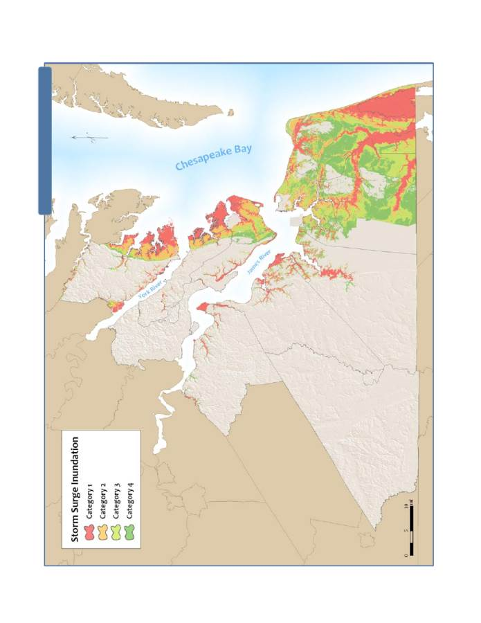
C
lim
at
e
C
ha
ng
e
in
H
am
pt
on
R
oa
ds
: I
m
pa
ct
s
an
d
St
ak
eh
ol
de
r I
nv
ol
ve
m
en
t
8
Fi
gu
re
3
: S
to
rm
S
ur
ge
in
H
am
pt
on
R
oa
ds
Cr
ea
te
d
by
th
e
H
am
pt
on
R
oa
ds
P
la
nn
in
g
D
is
tr
ic
t C
om
m
is
si
on
St
or
m
s
ur
ge
d
at
a
ob
ta
in
ed
fr
om
th
e
V
ir
gi
ni
a
D
ep
ar
tm
en
t o
f E
m
er
ge
nc
y
M
an
ag
em
en
t
Climate Change in Hampton Roads: Impacts and Stakeholder Involvement
9
C
LIMATE
C
HANGE
I
MPACTS
The last section focused on the causes of
climate change and its predicted effects. This
section will look more closely at the impacts
of climate change, with a focus on Hampton
Roads. Impacts will be the result of
interactions between effects such as higher
temperatures and sea level rise on various
sectors of the human and natural
environments such as built infrastructure,
human health, and ecological systems.
The Chesapeake Bay is a sensitive
environmental system that will experience
significant changes due to climate change,
including increases in temperature and
salinity. More intense storms and greater
stream flow will increase erosion of coastal
land formations. Increases in water
temperature and salinity will affect species
composition and populations, causing
important Bay species to decline or disappear.
Wetlands, marshes, and other ecologically
significant ecosystems will also be severely
affected by climate change; rising sea level
combined with urban development may
result in the destruction of these areas if they
cannot migrate to higher elevations. Climate
change may also “exacerbate threats already
faced by Virginia ecosystems, such as invasive
species, pathogens, and pollution,”
(Governor's Commission on Climate Change,
2008). Infrastructure and populations in
Hampton Roads are also at risk from the
effects of climate change. Large populations
live in areas already subject to flooding
during storm events; those areas will be even
more vulnerable as climate change occurs.
Similarly, many important or critical facilities
or infrastructures are in areas that will be
increasingly subject to flooding or
inundation.
V
ULNERABILITY AND
R
ISK
The impacts of climate change will not be felt
uniformly across the world. Determining
what the likely impacts will be is one of the
first steps in successfully adapting to climate
change (Snover, et al., 2007). The impacts of
climate change will depend on several
interrelated, local characteristics, including
risk, sensitivity, and vulnerability.
Risk is a combination of an event’s likelihood
and its consequence (Deltacommissie, 2008).
Consequence in this case refers to the
impacts or effects of an occurrence (i.e. what
could happen or how much damage could
result). Reducing either factor reduces total
risk; alternately, increasing either increases
risk. An example of reducing the probability
of an event is the construction of a levee to
prevent flooding. Reducing the consequences
of that flooding could involve moving
buildings out of the flood zone.
Sensitivity is the degree to which a
community is affected by an occurrence
(Snover, et al., 2007). A low-lying community
is sensitive to sea level rise because that could
result in flooding or inundation of important
areas. Climate change will likely increase the
region’s sensitivity to storm events.
Vulnerability is a combination of sensitivity
and adaptive capacity (Snover, et al., 2007).
These combined with risk provide an
assessment of how a natural hazard might
affect a community. Adaptive capacity refers
to an area’s ability to adapt to changing
circumstances. It can also refer to a
community’s resilience, or ability to recover
quickly with minimal lasting damage from an
event. Areas where hazards occur more often
that have high sensitivity and low adaptive
capacity are consequently more vulnerable to
those hazards.
Climate change may
“exacerbate threats
already faced by
Virginia ecosystems.”
- Governor’s
Commission on
Climate Change

Climate Change in Hampton Roads: Impacts and Stakeholder Involvement
10
Using these terms to describe Hampton
Roads provides a good general analysis of why
the region needs to address the threats of
climate change. Climate change increases the
probability of flooding or strong storms,
while existing development patterns increase
the consequences of those events. The region
lies near sea level and depends on the ocean
for much of its economy, resulting in a high
degree of sensitivity. Currently the region is
also very vulnerable to climate change
because of its infrastructure and building
patterns. This region will be sensitive to
weather and flooding because of its
geography. Responding to climate change
should involve addressing potential impacts
through the reduction of risk and
vulnerability.
B
UILT
E
NVIRONMENT
Climate change will have significant effects
on the built environment. Stronger storms
with higher wind speeds will cause greater
amounts of damage to structures. Storms
already pose significant risks to Hampton
Roads’ private property and public
infrastructure, and climate change will likely
only increase that risk (Karl, Melillo, &
Peterson, 2009). Recent storm events have
only confirmed how vulnerable the region is
to flooding. One potential consequence of
more intense storms combined with sea level
rise is that future storms could cause greater
damage without being as strong, or that
stronger storms could cause substantially
more damage. Hurricane Isabel, as an
example, caused a similar level of flooding as
the August 1933, which was the region’s
“storm of the century,” (Boon, The Three
Faces of Isabel: Storm Surge, Storm Tide, and
Sea Level Rise, 2003). That risk will increase
both in consequence and in frequency.
Though sea level rise is not the only
contributor to a hurricane or other storm’s
surge (when a storm occurs during lunar and
astronomic tidal cycles is another significant
factor), a higher sea level means that the
potential for devastating flooding will be
higher. Increased risk of flooding will also
have an impact on property owners through
the insurance industry, as premiums rise or
availability declines (Governor's Commission
on Climate Change, 2008).
Rising waters may inundate or periodically
flood both property and infrastructure,
causing its loss and requiring its removal. The
Hampton Roads region is particularly
vulnerable because of its highly dense
population pattern near the shore (CCSP,
2009). The Virginia Beach-Norfolk
Metropolitan Statistical Area is one of the
most vulnerable areas in the world; it is the
10
th
largest coastal metropolitan area in terms
of assets exposed (Governor's Commission on
Climate Change, 2008). Specific areas of the
region at risk due to sea level rise or flooding
from storms include the eastern part of the
Peninsula and the Elizabeth River and North
Landing River watersheds. The number of
nationally, regionally, or locally important
structures, facilities, and systems at risk is
large. Critical infrastructure such as
roadways, railways, and utilities are in
vulnerable areas. A study by the U.S.
Department of Transportation analyzed the
impacts of sea level rise on transportation
infrastructure due to inundation and storm
surge flooding (Wright & Hogan, 2008).
Important transportation infrastructure in
Hampton Roads that is vulnerable to sea level
rise includes the Interstate 64 Hampton
Roads Bridge Tunnel. A number of military
installations, including Naval Station Norfolk,
Joint Expeditionary Base Little Creek – Fort
Story, Joint Base Langley-Eustis, Fort Monroe,
Naval Weapons Station Yorktown, Naval
Shipyard Norfolk, and others are also in
vulnerable areas (Governor's Commission on
Climate Change, 2008).
Hampton Roads is
one of the most
vulnerable regions in
the world.

Climate Change in Hampton Roads: Impacts and Stakeholder Involvement
11
N
ATURAL
E
NVIRONMENT
Climate change will have a number of
impacts on the natural environment. These
impacts can be divided into those that affect
plant and animal species and those that affect
landforms.
Plants and animals will be threatened by
climate change’s impacts of increased
temperatures as well as the changes in
environments it causes. Many species are
highly sensitive to climate conditions such as
temperature, salinity, and CO
2
concentrations, and changes to those
conditions could alter population balances in
the Bay. While increased CO
2
in the
atmosphere may encourage plant growth,
heat stress may cause it to decline. Wetlands
plants will be drowned due to floodwaters or
sea level rise. CO
2
deposition will result in
ocean acidification, which can reduce the
ability of corals and oysters to survive (Karl,
Melillo, & Peterson, 2009). Additionally,
higher temperatures will lead to lower levels
of dissolved oxygen, which will reduce the
capacity of aquatic environments to support
life. This could have a significant effect on
several important species in the Chesapeake
Bay, including blue crabs, eel grass, and
oysters, causing species shift or potentially
extinction (Governor's Commission on
Climate Change, 2008). Water quality will be
negatively affected by climate change.
Increased stream flow from more intense
rainfall events will increase concentrations of
sediments and nutrient pollutants in the
Chesapeake Bay and its contributing
waterways (Pyke, et al., 2008). In addition,
climate change could deprive some species of
nursery or nesting habitats; wetlands that are
important for migrating waterfowl could also
disappear, negatively affecting those species
(Jasinski & Claggett, 2009). Climate change
could also encourage the spread of marine
diseases and invasive species.
Negative impacts on the environment will
result in the loss or transition of important
landforms and ecosystems. Sea level rise will
inundate some wetlands, resulting in marsh
drowning and the transition of those areas to
open water (Jasinski & Claggett, 2009). Sea
level rise and stronger storms will result in
significant shoreline erosion, further resulting
in the drowning of wetlands (Karl, Melillo, &
Peterson, 2009). In some cases ecological
thresholds will be crossed as triggering events
such as storms breach barrier islands. Such
events would cause rapid ecosystem change
and loss of coastal landforms. Large storm
events could, with sea level rise, have greater
potential to change the coast by destroying
already fragile barrier islands or other
sensitive coastal landforms. Where possible
landforms such as coastal wetlands may
migrate inland if change is gradual enough;
however, in more urban areas like much of
Hampton Roads that migration is prevented
by development or infrastructure. This will
result in further destruction of wetlands
(Pyke, et al., 2008). Climate change will thus
exacerbate many of the negative impacts
already affecting important ecological areas.
W
ATER
S
UPPLY
Climate change will have significant effects
on water resources in Hampton Roads and
around the world. Warming weather will
cause changes in the frequency and volume of
precipitation, the frequency and length of
droughts, changes in the timing of spring
snow melt, higher rates of evaporation, and
increases in water temperatures (Karl,
Melillo, & Peterson, 2009). Exactly how the
regional water supply of Hampton Roads will
be affected is unclear. Higher temperatures
will likely lead to greater evaporation of
surface water sources, including shallow
reservoirs, leading to reduced supplies. While
annual precipitation will likely increase in the
region, it will likely occur in more
concentrated bursts, with longer periods of
Climate change will
exacerbate many of
the negative impacts
already affecting
important ecological
areas.

Climate Change in Hampton Roads: Impacts and Stakeholder Involvement
12
drought in between large storm events (Karl,
Melillo, & Peterson, 2009). Greater
concentration of preciptation during storm
events will cause increases in stream flow,
while longer dry periods between storms may
result in reduced stream flow. Greater
demand for water for irrigation may also
result from higher temperatures and longer
periods of drought. Increased demand for air
conditioning will also stress water supplies, as
power plants use more water for cooling.
Longer periods without rainfall will stress
water resources. Larger rainfall events may
also stress water storage capacity with
potential consequences for water supply
infrastructure such as dams and reservoirs.
Climate change may change conditions to the
extent that water resources planning can no
longer use data from the past as a guide to
the future availability of water (Karl, Melillo,
& Peterson, 2009).
Climate Change will also have water quality
impacts. Greater precipitation intensity will
likely increase runoff, which will decrease
surface water quality. More runoff will carry
more pollution to the Chesapeake Bay,
leading to algae blooms and higher bacteria
populations (Karl, Melillo, & Peterson, 2009).
Greater periods of drought will reduce the
quality of drinking water supplies. Sea level
rise will also increase the reach of salt water
into freshwater surface waters as well as
coastal aquifers, due to increasing
evaporation and plant water loss rates (Karl,
Melillo, & Peterson, 2009). This may force
localities to use desalination in more
instances.
E
CONOMY
The Hampton Roads regional economy is
heavily dependent on several industries
related to the ocean. These include tourism,
the military, and the Port of Virginia. Tourism
along the oceanfront is a large factor in the
Virginia Beach economy that affects the rest
of the region. The military has several
installations that will be more vulnerable to
sea level rise and are already vulnerable to
storm surge flooding. Loss of these
installations and the transfer of their
personnel to other areas of the country would
result in the loss of many jobs and supporting
industries in the area. The Port of Virginia
and related industries will also be affected by
climate change. Port and shipbuilding
infrastructure may be inundated or
periodically flooded, resulting in work
stoppages or the removal of these facilities
entirely. Replacement costs for any of these
facilities would be very high. Additionally,
increases in storm occurrences may result in
higher insurance costs for infrastructure,
homes, and businesses, potentially leading to
lower rates of economic development and
growth.
While climate change will pose many serious
challenges for the region, mitigating and
adapting to climate change will offer
Hampton Roads several opportunities for
economic development. Hampton Roads is
well suited for two such opportunities in
particular. The development of wind energy
will be important to reducing greenhouse
gases and offshore wind will be a significant
resource to develop. An area with category 5
and 6 (high potential for wind energy) winds
lies offshore of Virginia Beach. In addition to
being an ideal location for wind energy
generation, Hampton Roads has some assets
that could serve to make the region a hub of
logistical support, including a deep water port
and developed industrial capacity, which
could help the region take advantage of
offshore wind energy development elsewhere
along the Atlantic coast. Hampton Roads also
has a developing modeling and simulation
industry with institutions such as the Virginia
Modeling, Analysis and Simulation Center in
Suffolk (part of Old Dominion University in
Norfolk) and the Virginia Institute of Marine
Climate change may
change conditions to
the extent that water
resources planning
can no longer use
data from the past as
a guide to the future
availability of water.

Climate Change in Hampton Roads: Impacts and Stakeholder Involvement
13
Science in Gloucester. VIMS is already
working on modeling the impacts of climate
change, and VMASC could apply some of its
capabilities in that direction.
H
UMAN
H
EALTH AND
S
OCIETY
Climate change may have negative effects on
human health in the region; however, these
effects will probably be slow to occur and will
thus afford the region the chance to
effectively plan and respond. More intense
storms will have the potential to cause injury
and death to Hampton Roads residents, as
well as property damage. Storms could also
interfere with food and water supplies.
Warmer weather may lead to more diseases
in the region that are currently found in more
southern areas. Illnesses and deaths due to
hotter weather may also increase, though
some of this will be offset by a decrease in
injuries and deaths due to cold weather (Karl,
Melillo, & Peterson, 2009). Diseases
associated with air pollution may also
increase as the result of climate change. In
addition to those effects, many populations in
Hampton Roads will be particularly
vulnerable to climate change. Lower-income
individuals may not have the resources to
prepare themselves in advance for these
changes or to respond when storms or
warmer weather occur. Racial and ethnic
minorities, children, and the elderly are all
more vulnerable. Populations living in coastal
areas and floodplains, of which there are
many in the Hampton Roads region, will also
be much more vulnerable to sea level rise,
storm events, and some diseases than others.
Changes in weather patterns, particularly the
increase in heavy rainfall events, may cause
an increase in waterborne diseases (Karl,
Melillo, & Peterson, 2009).
Climate change will also impact humans
culturally, socially, and economically. Climate
change will change the quality of life for
people in Hampton Roads. Though the
research in this area of climate change
impacts is not as developed as that for the
weather and environmental effects, it is likely
that human communities will be affected by
climate change. Those affected by climate
change could potentially include watermen,
farmers, shoreline property owners, coastal
governments, residents, and tourists. Possible
effects of climate change include: damage to
coastal infrastructure, increased risk of
disease from insects, changes to renewable
and sustainable resources, loss of cultural
resources and values, and changes in species
abundance and spread. The costs of climate
change could include greater funding of flood
control measures, losses to agricultural
production, reduced water supplies (or
shifting reliance to more expensive sources),
impacts to forestry operations, greater
seasonal energy usage, lost recreational
opportunities, and reduced fisheries stocks.
Reduced availability of insurance in areas
exposed to storms and flooding will be one
consequence of climate change that will affect
some Hampton Roads residents (Karl,
Melillo, & Peterson, 2009). Possible responses
to these impacts could include stormwater
management, urban stream restoration,
fishery management, and incorporating
climate assumptions into building and
planning practices (Pyke, et al., 2008).
Climate Change in Hampton Roads: Impacts and Stakeholder Involvement
14
A
NALYSIS
:
N
ATURAL
R
ESOURCES
I
MPACTS IN
H
AMPTON
R
OADS
The previous two sections discussed the
effects of climate change and what impacts
they will have on various sectors. Once the
types of impacts are identified it is important
to assess the quantity and quality of those
impacts. This sort of analysis requires
information on both the extent of impacts as
well as the affected sector(s). For Hampton
Roads much of this data is unavailable at this
time, but considerable work has been done
cataloging the region’s natural resources
through a series of regional green
infrastructure assessments and plans. A basic
analysis has been conducted using the
available data to begin the process of
analyzing the impacts of climate change on
the region. Information on these impacts has
also been collected from other sources to
complement the analysis.
Natural resources provide a wealth of
benefits, including ecological services such as
water quality enhancement and wildlife
habitat, as well as recreational value.
Protecting, preserving, and enhancing the
natural resources of Hampton Roads is vital
to sustaining its natural environment as well
as its quality of life. To this end, several
regional efforts have aimed to identify those
areas that should be protected and to develop
policies that achieve that goal. These efforts
have included the Southern Watershed Area
Management Program and the Hampton
Roads Conservation Corridor Study (HRPDC,
2007). Through these projects a regional
green infrastructure network was identified.
This green infrastructure consists of areas
that are valuable for natural habitat,
water quality, or both that are linked
together through a network of corridors.
The most recent version of the regional green
infrastructure network includes over 500,000
acres of green infrastructure in all three
categories.
However, natural resources such as the
regional green infrastructure network are
increasingly coming under threat from
climate change. Temperature increases, sea
level rise, and stronger storm behavior all
negatively affect valuable natural resources.
In addition, climate change will exacerbate
other stressors such as land development,
fertilizer use, and increases in human
population (Jasinski & Claggett, 2009). In
addition, the Chesapeake Bay region is more
vulnerable to sea level rise than most places
because of a combination of flat topography
and extensive development (Glick, Clough, &
Nunley, 2008). In some areas of the Bay,
including Hampton Roads, land subsidence
further increases vulnerability to sea level
rise. Since much of Hampton Roads’ green
infrastructure lies along the coast, sea level
rise and the increased storm surge that
accompanies it will have a profound effect on
the region’s natural resources and its ability
to maintain and preserve those resources into
the future.
Research by organizations such as the U.S.
Global Change Research Program and the
National Wildlife Federation (NWF) has
described the potential impacts of climate
change on natural resources. Expected
changes include reduced populations of plant
and animal species, shifts in species habitats,
inundation of low-lying areas, increased
turbidity and nutrient content of water
bodies, and erosion of coastal and riparian
areas (CCSP, 2009). Inundation of wetlands
increases the salinity of the ecosystem and
can also infiltrate groundwater aquifers,
which can reduce species diversity (Glick,
Clough, & Nunley, 2008). Sea level rise will
also increase the vulnerability of coastal areas
to storm surge.
Sea level rise and the
increased storm surge
that accompanies it
will have a profound
effect on the region’s
natural resources.

Climate Change in Hampton Roads: Impacts and Stakeholder Involvement
15
In some cases wetland migration inland will
occur as a natural response to sea level rise,
but often this will be prevented by
development or hard flood protection
systems. Protecting upland buffers from
development can reduce wetlands loss further
down the road (Glick, Clough, & Nunley,
2008). In some cases new wetlands may also
be created through accretion as sea level rises
and inundates low-lying coastal areas.
The National Wildlife Federation performed a
sea level rise impact analysis of the
Chesapeake Bay region and Delaware Bay in
2008. The model used, the Sea Level Affecting
Marshes Model (SLAMM), considered five
processes caused by sea level rise: inundation,
erosion, overwash, saturation, and salinity
(Glick, Clough, & Nunley, 2008). Scenarios
used were taken from or based on those
designed by the IPCC. Additional scenarios
were run based on sea level rise of 1 meter, 1.5
meters, and 2 meters. In this case sea level
rise refers to eustatic global sea level rise. Two
scenarios are of particular use here. The
Governor’s Commission on Climate Change
referenced the A1B scenario (0.39m of sea
level rise) in its description of climate change
impacts on the Commonwealth. The model
showed significant impacts across the entire
study area. In the A1B-Maximum scenario
(0.69m of sea level rise), tidal marsh area
declines by 36%. 57% of the Chesapeake Bay
region’s tidal swamps also disappear by 2100.
In addition, 4%, or over 400,000 acres, of
coastal land is also lost through inundation or
erosion. These losses and others through sea
level rise and climate change have the
potential to form a “completely different
Chesapeake Bay region,” with different land
forms, flora, and fauna (Glick, Clough, &
Nunley, 2008).
NWF also ran the model for several subareas
of the Chesapeake Bay region, including two
in Hampton Roads: Mobjack Bay between
Gloucester County and the Peninsula (Figure
4) and South Hampton Roads (Figure 8). The
model predicts different impacts for these
areas. In the Mobjack Bay area, undeveloped
dry land declines by 13% under the A1B-Mean
scenario (Figure 5), and by 19% under 1 meter
of sea level rise (Figure 6), with much of this
occurring in Eastern Hampton and
Gloucester (Glick, Clough, & Nunley, 2008).
Other impacts predicted for the area include
soil saturation, conversion of brackish marsh
to salt marsh, and conversion of dry land to
transitional marsh. The study assumed that
developed lands would be protected from sea
level rise for this scenario. The scenario does
not predict or account for any increase in
developed land.
The South Hampton Roads coastal area is
similarly affected. In both cases a significant
part of the area is already developed. (The
same assumptions concerning developed land
are maintained for this analysis as well.)
Undeveloped dry lands are predicted to
decrease by 16% under the A1B-Mean scenario
(Figure 9) and by 22% under a 1-meter rise in
sea level (Figure 10). Tidal flats and tidal
swamps are also predicted to experience
significant losses in the area. Some
environments such as saltmarshes are
expected to experience significant increases.
Ocean beach is expected to decline
significantly, though the analysis does not
allow for artificial beach re-nourishment
(Glick, Clough, & Nunley, 2008). A significant
inland area of Virginia Beach will be
threatened because of the reach of the North
Landing River, which will be subject to
increased tidal flooding (lower right area of
Figures 9 and 10).
In order to assess the potential impact of sea
level rise on ecologically important areas of
the region a GIS analysis was performed on
the regional green infrastructure network.
The green infrastructure network consists of
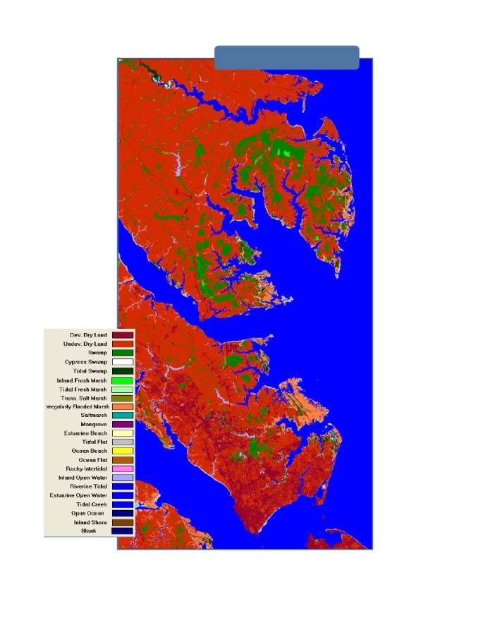
Climate Change in Hampton Roads: Impacts and Stakeholder Involvement
16
(Glick, Clough, & Nunley, 2008)
Figure 4: Initial Conditions
Mobjack Bay, Virginia
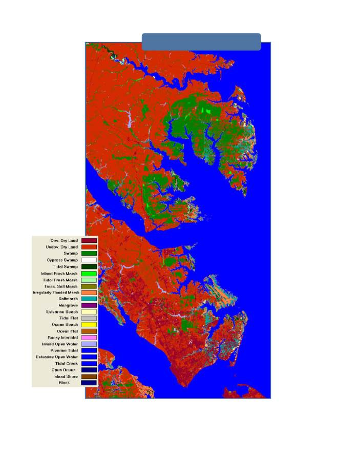
Climate Change in Hampton Roads: Impacts and Stakeholder Involvement
17
(Glick, Clough, & Nunley, 2008)
Figure 5: 39-cm (1.28 ft) Sea Level Rise by 2100
Mobjack Bay, Virginia
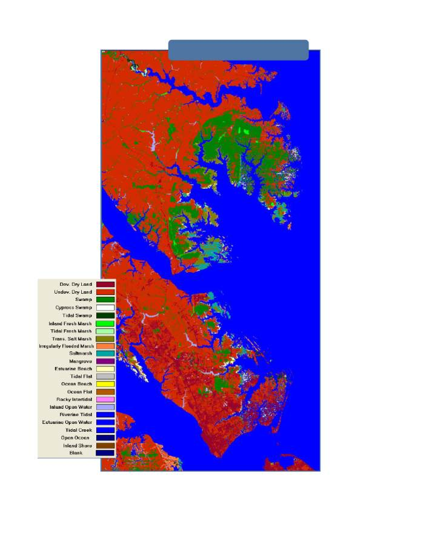
Climate Change in Hampton Roads: Impacts and Stakeholder Involvement
18
(Glick, Clough, & Nunley, 2008)
Figure 6: 1-m (3.28 ft) Sea Level Rise by 2100
Mobjack Bay, Virginia
Climate Change in Hampton Roads: Impacts and Stakeholder Involvement
19
Figure 7: Land Cover Loss and Change due to Sea Level Rise (SLR), Mobjack Bay, Virginia
Terrain
% of Initial
Cond.
Initial Cond.
(acres)
39-cm (1.28 ft)
SLR (acres)
39-cm (1.28 ft)
SLR % Change
1-m (3.28 ft)
SLR % Change
Dry Land
39.8%
266,182
232,393
-13%
-19%
Developed
5.1%
33,893
33,893
0%
0%
Swamp
5.5%
37,019
54,902
48%
26%
Cypress Swamp
0.0%
17
17
0%
0%
Inland Fresh
Marsh
0.2%
1,562
1,569
0%
-6%
Tidal Fresh
Marsh
0.1%
709
724
2%
-13%
Transitional
Marsh
0.2%
1,028
3,257
217%
1,015%
Irregularly
Flooded Marsh
3.5%
23,747
16,502
-31%
-80%
Saltmarsh
0.1%
487
14,466
2,872%
1,621%
Estuarine
Beach
0.1%
655
2,399
266%
479%
Tidal Flat
0.9%
6,296
336
-95%
-74%
Ocean Beach
0.0%
0
0
N/A
N/A
Inland Open
Water
0.6%
3,788
3,872
2%
1%
Estuarine Open
Water
43.0%
287,962
300,253
4%
17%
Open Ocean
0.0%
0
0
N/A
N/A
Inland Shore
0.0%
5
5
0%
-8%
Tidal Swamp
0.8%
5,582
4,389
-21%
-67%
Rocky Intertidal
0.0%
0
0
N/A
N/A
Riverine Tidal
0.0%
225
175
-22%
-41%
Tidal Creek
0.0%
0
0
N/A
N/A
(Glick, Clough, & Nunley, 2008)

Climate Change in Hampton Roads: Impacts and Stakeholder Involvement
20
(Glick, Clough, & Nunley, 2008)
(Glick, Clough, & Nunley, 2008)
Figure 8: Initial Conditions
South Hampton Roads, Virginia
Figure 9: 39-cm (1.28 ft) Sea Level Rise by 2100
South Hampton Roads, Virginia

Climate Change in Hampton Roads: Impacts and Stakeholder Involvement
21
(Glick, Clough, & Nunley, 2008)
Figure 10: 1-m (3.28 ft) Sea Level Rise by 2100
South Hampton Roads, Virginia
Climate Change in Hampton Roads: Impacts and Stakeholder Involvement
22
Figure
11: Land Cover Loss and Change due to Sea Level Rise (SLR), South Hampton Roads, Virginia
Terrain
% of Initial
Cond.
Initial Cond.
(acres)
39-cm (1.28 ft)
SLR (acres)
39-cm (1.28 ft)
SLR % Change
1-m (3.28 ft)
SLR % Change
Dry Land
29.5%
143,373
120,578
-16%
-22%
Developed
15.1%
73,373
73,373
0%
0%
Swamp
9.5%
46,028
51,818
13%
10%
Cypress Swamp
0.1%
546
544
0%
0%
Inland Fresh
Marsh
0.3%
1,554
1,621
4%
-5%
Tidal Fresh
Marsh
0.0%
111
82
-27%
-52%
Transitional
Marsh
0.0%
217
3,603
1,557%
1,882%
Irregularly
Flooded Marsh
1.5%
7,497
8,335
11%
-54%
Saltmarsh
0.0%
40
9,232
23,250%
16,560%
Estuarine
Beach
0.1%
408
1,530
275%
396%
Tidal Flat
0.6%
2,745
539
-80%
32%
Ocean Beach
0.1%
274
77
-72%
-96%
Inland Open
Water
1.1%
5,132
4,861
-5%
-7%
Estuarine Open
Water
26.1%
126,745
133,037
5%
16%
Open Ocean
14.1%
68,335
73,660
8%
8%
Inland Shore
0.5%
2,204
1,275
-42%
-57%
Tidal Swamp
1.4%
6,798
1,601
-76%
-97%
Rocky Intertidal
0.0%
5
0
-100%
-100%
Riverine Tidal
0.1%
697
324
-54%
-62%
Tidal Creek
0.0%
0
0
N/A
N/A
(Glick, Clough, & Nunley, 2008)
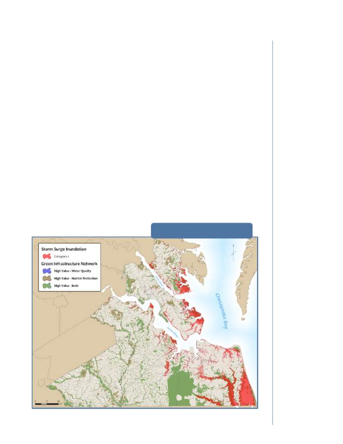
Climate Change in Hampton Roads: Impacts and Stakeholder Involvement
23
areas in the region that are ecologically
valuable for water quality purposes, habitat,
or both (HRPDC, 2010). The plan provides an
inventory of existing natural resources and
valuable areas as well as a guide for
preservation and protection efforts.
Incorporating sea level rise projections allows
for the prioritization of areas that should be
preserved to allow for upland migration in
coastal and riparian areas. The latest update
to the regional plan identified over 500,000
acres of high value areas, including over
12,000 acres of land of high value for water
quality, over 96,000 acres of land of high
value for habitat, and over 400,000 acres of
high value for both.
Long-term viability of the green
infrastructure network will be in part affected
by sea level rise as areas are inundated or
subject to more frequent flooding. Climate
change may result in the permanent loss of
green infrastructure or significant change in
some areas. Accurately assessing the impacts
of sea level rise on green infrastructure
requires consistent high-resolution elevation
data. In the absence of such data an analysis
was done using Category 1 storm surge
(approximately four to five feet above normal
sea level) as a proxy for projected impacts
from the combination of sea level rise and
increased storm surge. However, better
elevation data is needed for more reliable
analysis of these impacts. Using storm surge
data reveals areas that are at risk both due to
inundation and to increased flooding from
storms. To analyze the impacts of sea level
rise on the regional green infrastructure
network storm surge data was overlaid on the
network using GIS (Figure 12). The analysis
showed that over 84,000 acres or 16.5% of the
region’s green infrastructure network will be
at risk of inundation or more frequent
flooding due to climate change. This includes
approximately 3,900 acres of area valuable for
water quality, 1,500 acres of area valuable for
habitat, and nearly 79,000 acres valuable for
Figure 12: Storm Surge Inundation of
Green Infrastructure in Hampton Roads
Over 84,000 acres or
16.5% of the region’s
green infrastructure
network will be at risk
of inundation or more
frequent flooding due
to climate change.
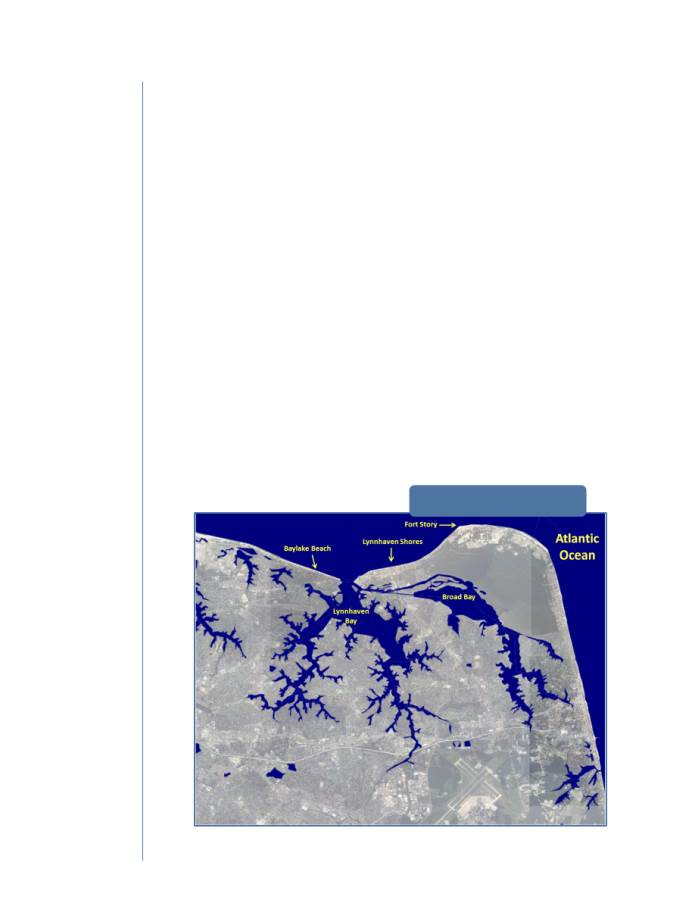
Climate Change in Hampton Roads: Impacts and Stakeholder Involvement
24
both. In addition, this analysis does not
account for how climate change will
exacerbate many of the other stressors
already affecting the region’s green
infrastructure, such as non-surge riverine
flooding, nutrient pollution from
development and agriculture, and increased
salinity in waterways and aquifers.
A similar analysis was conducted by staff at
the Virginia Institute of Marine Science, the
Chesapeake Bay Observation System, and
Noblis. This analysis used some high-
resolution elevation data and storm surge
models to analyze the impact of a major
storm event when modified by sea level rise
(Stamey, Wang, & Smith, 2010). For their
analysis the researchers used Hurricane Isabel
as their test case, and modified it using set
intervals of sea level rise between 0.5m and
2.0m (Figures 13-19). One of the focus areas of
the analysis was centered on Lynnhaven Bay
in Virginia Beach. The Hampton Roads
Conservation Corridor (HRPDC, 2006)
system was used to show regional
vulnerability to a large storm event that is
modified by sea level rise. The analysis shows
that the study area will be greatly affected by
storms because of sea level rise, and that the
conservation corridor system is extremely
vulnerable to flooding. Additionally, that
vulnerability will increase over time as sea
level continues to rise. Hurricane Isabel
showed that parts of the region and the
conservation corridor system are already
vulnerable, but a similar storm fifty to a
hundred years from now could devastate the
area. A catastrophic storm event, symbolized
by the Hurricane Isabel +2m scenario (Figure
18), has the potential to not only inundate
much of the system, but also significantly
alter the coastline. Such a result could occur
if a barrier island or coastal dune system were
breached by a storm, which could then cause
severe erosion.
Figure 13: Initial Conditions,
Virginia Beach, Virginia
Image from (Stamey, Wang, & Smith, 2010)
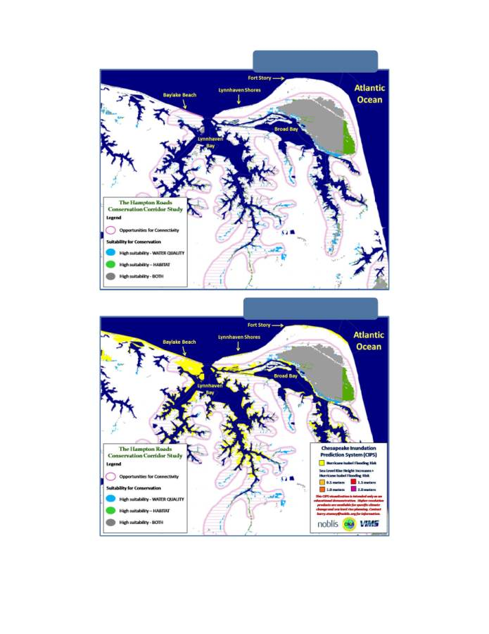
Climate Change in Hampton Roads: Impacts and Stakeholder Involvement
25
Images from (Stamey, Wang, & Smith, 2010)
Figure 14: Conservation Corridors,
Virginia Beach, Virginia
Figure 15: Hurricane Isabel flood risk,
Virginia Beach, Virginia
This series of maps is a demonstration of the capability of running high resolution inundation models using
hypothetical conditions developed by NOBLIS and VIMS as part of the Chesapeake Bay Inundation System (CIPS). The
sea level rise increments depicted are not a prediction of future sea level rise. NOBLIS and VIMS reserve copyright and
permission must be obtained from them prior to any use of the images.
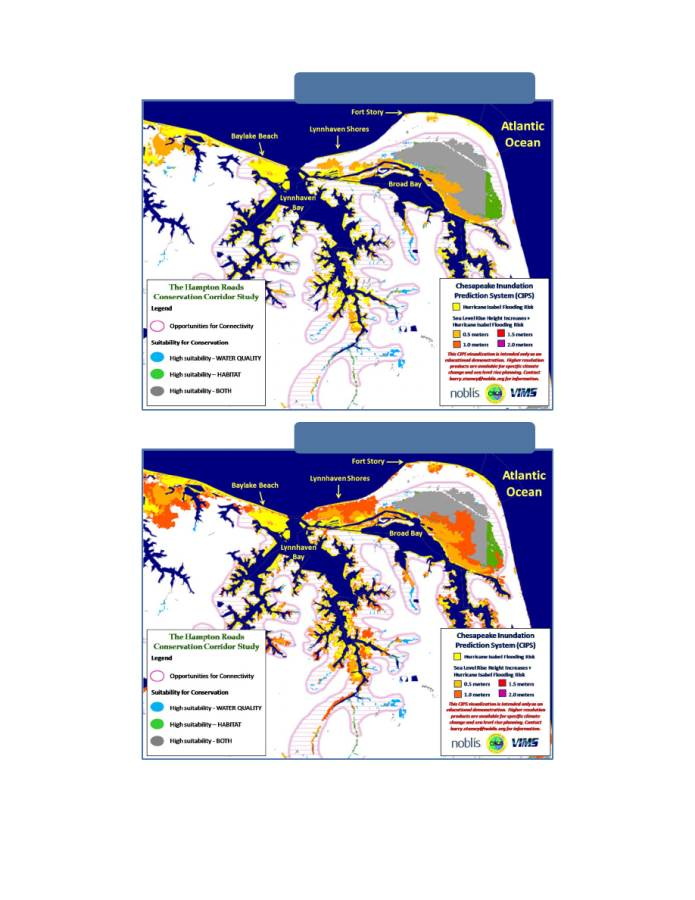
Climate Change in Hampton Roads: Impacts and Stakeholder Involvement
26
Images from (Stamey, Wang, & Smith, 2010)
Figure 16: Hurricane Isabel flood risk +0.5m SLR,
Virginia Beach, Virginia
Figure 17: Hurricane Isabel flood risk +1.0m SLR,
Virginia Beach, Virginia
This series of maps is a demonstration of the capability of running high resolution inundation models using
hypothetical conditions developed by NOBLIS and VIMS as part of the Chesapeake Bay Inundation System (CIPS). The
sea level rise increments depicted are not a prediction of future sea level rise. NOBLIS and VIMS reserve copyright and
permission must be obtained from them prior to any use of the images.
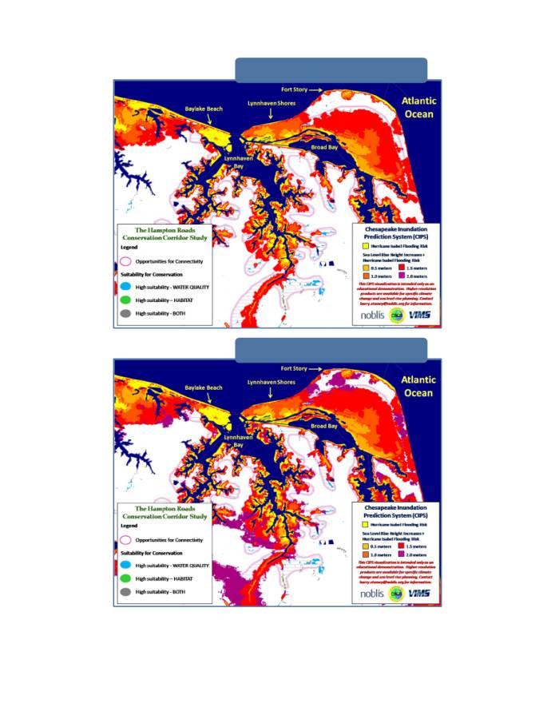
Climate Change in Hampton Roads: Impacts and Stakeholder Involvement
27
Images from (Stamey, Wang, & Smith, 2010)
Figure 18: Hurricane Isabel flood risk +1.5m SLR,
Virginia Beach, Virginia
Figure 19: Hurricane Isabel flood risk +2.0m SLR,
Virginia Beach, Virginia
This series of maps is a demonstration of the capability of running high resolution inundation models using
hypothetical conditions developed by NOBLIS and VIMS as part of the Chesapeake Bay Inundation System (CIPS). The
sea level rise increments depicted are not a prediction of future sea level rise. NOBLIS and VIMS reserve copyright and
permission must be obtained from them prior to any use of the images.

Climate Change in Hampton Roads: Impacts and Stakeholder Involvement
28
R
ESPONDING TO
C
LIMATE
C
HANGE
An effective response to climate change
impacts will require both mitigation and
adaptation.
Mitigation actions are
intended to reduce the extent and rate of
acceleration of climate change by
reducing greenhouse gas emissions.
Adaptation actions are intended to
minimize the adverse impacts of climate
change on built and natural systems.
Given current atmospheric greenhouse gas
levels, global temperatures will continue to
rise over the next century, making adaptation
a necessity regardless of mitigation strategies.
The reverse is also true; without mitigation
climate change will at some point exceed
cost-effective adaptive capacity. The long-
term rate of climate change will be
determined by global ability to limit the
growth of and eventually reduce greenhouse
gas emissions over the next 20 to 40 years.
The extent and type of adaptation measures
needed in Hampton Roads will largely be
determined by global greenhouse gas
emissions during that 20 to 40 year window.
If global greenhouse gas emissions are held
flat or reduced during that time period, sea
level rise rates are projected to be
problematic but are likely to be manageable.
If greenhouse gas emissions continue to rise
significantly during that period massive
melting of polar ice will result and sea level
rise will have a catastrophic impact on the
eastern portion of Hampton Roads.
A
DAPTATION
Adaptation to climate change will involve
both changing development patterns and
protecting existing development with flood
control measures. Many adaptation options
are available.
In general, these can be
broken down into three categories:
protection, accommodation, and retreat
(Karl, Melillo, & Peterson, 2009).
Protection refers to structural solutions to
protect against flooding, storm surge, or
inundation. Possible measures include
seawalls, bulkheads, dikes, and storm surge
barriers (CCSP, 2009). Accommodation refers
to retrofitting or enhancing existing
structures or environments. This could
include elevating buildings, beach
renourishment, or enhancing wetlands (Karl,
Melillo, & Peterson, 2009). Retreat refers to a
broad range of options that allow or
encourage people and ecosystems to move
away from vulnerable areas. These can
include setbacks, rolling easements, and
development restrictions (CCSP, 2009).
Effective adaptation to sea level rise or
flooding “should focus on reducing growth in
areas forecasted to be” affected over the next
century (Jasinski & Claggett, 2009). Using
growth management to adapt to sea level rise
has multiple benefits. It can protect existing
ecosystems near the shore, and can provide
public value by preserving those areas for
recreation or public access. This ability to
meet other needs such as stormwater
management and habitat provision is a
general hallmark of many adaptation options.
They do not just help localities adapt to
climate change, but can also enhance quality
of life and the natural environment.
Research by the Chesapeake Bay Program
describes another method of adapting to
climate change. Their work differentiates
between adaptation and increasing resilience.
Adaptation focuses on specific targets to plan
for, while resilience planning focuses on
increasing the robustness of built or natural
infrastructure to deal with a wide range of
possible conditions (Pyke, et al., 2008).
Resilient systems bend under stress but do
not break, so they are able to weather storms
more effectively and recover more quickly.
Resilient systems are characterized by
redundancy, diversity, efficiency, autonomy,
strength, interdependence, adaptability, and
Given current levels
of atmospheric
greenhouse gases,
global temperatures
will continue to rise
over the next century,
making adaptation a
necessity.
Climate Change in Hampton Roads: Impacts and Stakeholder Involvement
29
collaborativeness (Godschalk, 2003). They are
designed so that one part’s failure does not
cause the whole system to collapse. For cities,
resilience implies distributed infrastructures
that reinforce each other, while also being
able to operate independently during crises
(Morrish, 2008). Adaptive responses are more
appropriate when future conditions are
predictable, while resiliency allows for
uncertainty (Pyke, et al., 2008).
Adaptation of natural systems to climate
change will look radically different from
adaptations in the built environment. Some
possible adaptation approaches for natural
systems include protecting key resources,
reducing anthropogenic stress, increasing
representation, replication, restoration,
refugia, and relocation (CCSP, 2008).
Protection focuses on identifying ecosystems
or species that provide a foundation for the
region’s natural environment. Reducing
anthopogenic stress focuses on reducing or
eliminating pollution or other stressors that
result from development. Adapting through
representation requires identifying and
protecting a diversity of species so that the
ecosystem can survive and recover.
Replication focuses on protecting several
representative species or ecosystems so that
they are not all lost during an event.
Restoration focuses on bringing back
damaged ecosystems. Refugia refers to
identifying less sensitive areas that could
provide new environments or refuges for
migrating species. Relocation describes
artificially moving species to less sensitive
areas when that movement is prevented by
development (CCSP, 2008). Unlike options
designed for the built environment, these
adaptation options for natural systems mostly
focus on reducing impediments to these
systems adapting themselves.
M
ITIGATION
Most of the mitigation options for limiting
climate change involve reducing emissions.
Mitigation focuses on planning for reducing
the impacts of climate change before they
occur; it is “proactive rather than reactive,”
(Godschalk, 2003). Lower emissions rates
sooner will lessen the overall magnitude of
climate change and its effects. However, “no
single technology can provide all the
mitigation potential in any sector,” so
adaptation will still be required (IPCC, 2007).
Emissions reductions can be achieved
through greater energy efficiency or
switching to lower- or non-emissions sources
of energy. Reforestation is also a potential
mitigation strategy. Strengthening natural
systems by removing development stressors
can also help mitigate some climate change
impacts. Most mitigation will require changes
in behavior. Several policies can be
implemented to promote lower emissions;
these include taxes on emissions and land-use
regulations that promote more mass transit
usage and less driving, or tax or other
incentives that offset energy efficiency or
alternative energy (IPCC, 2007).
O
PPORTUNITIES
Climate change has the potential to have
large impacts on the Hampton Roads
economy, but it may also provide some
opportunities for the region. Several
industries will be particularly hard hit by sea
level rise and increases in storm intensity;
tourism may suffer, and the military may also
have difficulties with keeping its facilities
accessible and functioning. Waterfront
property may also be damaged, resulting in
losses to both owners and to localities
through decreases in property tax revenue.
The impacts on physical infrastructure are
hard to quantify but could potentially be
high, as much of the region’s critical
infrastructure is located in areas that would
Climate change has
the potential to have
large impacts on the
Hampton Roads
economy, but it may
also provide some
opportunities.

Climate Change in Hampton Roads: Impacts and Stakeholder Involvement
30
be affected to some degree by climate change.
However, mitigation and adaptation
measures addressing climate change may
provide some benefits to the region. A focus
on alternative energy could lead to the
development of wind farms off the coast and
potentially to the development of a locally
based industry to supply wind energy
equipment and expertise to the region and
the nation. Striving for energy efficiency
could have a similar effect. Research into the
physical adaptation responses to sea level rise
could lead to the development of new
infrastructures that are better suited to a
more volatile climate and are more resilient
to the weather patterns the region already
deals with.
P
ARALLEL
E
FFORTS
Hampton Roads localities are currently
working on several efforts that closely relate
to the goals of climate change adaptation and
mitigation. A committee has been meeting
for several months to discuss coordination of
Energy Efficiency and Conservation Block
Grant funds spending. Non-Entitlement
localities worked together to submit a
regional application for lighting upgrades,
while three of the region’s Entitlement
communities have allocated funds to a
regional greenhouse gas emissions inventory.
Both of these projects fall under the
mitigation category. The HRPDC Elizabeth
River Restoration Program Steering
Committee is looking into coastal resilience
planning areas around the river. One goal of
this effort is to account for industrial and
contaminated sites that may be inundated or
flooded due to sea level rise. Planning for this
is still underway. Regional emergency
management personnel are engaged in two
projects relating to climate change
adaptation. The first is the update of the
region’s hazard mitigation plans, including
regional plans for most of the Peninsula and
Southside communities. For the first time, sea
level rise will be accounted for in the plans.
Also, HRPDC is in the process of developing a
regional critical infrastructure/key resources
plan, which will include sector plans focusing
on resiliency.
D
EVELOPMENT OF A
F
RAMEWORK FOR
M
ITIGATION AND
A
DAPTATION TO
C
LIMATE
C
HANGE IN
H
AMPTON
R
OADS
One of the goals for the next two years of this
project is to develop a regional framework for
mitigating and adapting to climate change.
The framework for mitigation and adaptation
to climate change in Hampton Roads is
intended to capture the results of the
stakeholder involvement and policy
formulation process and to serve as a regional
guidance document for meeting the
challenges of climate change. The framework
is intended to be a living document that will
be updated over time as knowledge about
climate change improves and conditions in
Hampton Roads change. Several significant
difficulties exist in the development of such a
framework. Those difficulties include the
unknown future rate of global greenhouse gas
emissions, technical difficulties in
downscaling global climate models to predict
regional impacts and an extremely long
planning horizon. Given these challenges the
framework will need to be flexible and
modular so that its structure can be revised
and sections can be updated easily as
circumstances and scientific knowledge
change.
Establishment of a specific set of goals for the
framework will be accomplished through an
extensive stakeholder involvement process.
The following set of general goals will be used
as a starting point for that process:
Identify and implement regional and
local measures that contribute to

Climate Change in Hampton Roads: Impacts and Stakeholder Involvement
31
State and National efforts to mitigate
climate change;
¾ Structure mitigation and adaptation
efforts so that they ensure the
continued economic vitality and
ecological integrity of Hampton
Roads;
¾ Safety and high quality of life for
citizens of Hampton Roads will be
paramount in the mitigation and
adaptation process;
As is the case with the goals for the process,
the structure of the framework will be revised
and improved through the stakeholder
involvement process and subsequent research
and modeling. The following structure will
be used as a starting point.
Mitigation efforts will focus on
completing the regional greenhouse gas
emissions inventory and developing an
implementable action plan. This plan will
include the establishment of regional and
local emissions targets, as well as the
identification and implementation of
greenhouse gas emission control measures.
Adaptation efforts will focus on data and
information acquisition and development
of strategies for both the natural and
built environments. General data and
information needs include consistent, high‐
resolution elevation data for Virginia’s coastal
plain; improved understanding of sea level
rise rates; enhanced modeling tools for storm
surge changes associated with sea level rise;
and improved models for regional changes in
precipitation patterns.
Information needed for natural systems
adaptation includes a vulnerability
assessment for at‐risk ecosystems and a
prioritization of adaptation options. Once
these are acquired, several climate change
stressors will need to be evaluated. These
include sea level rise and storm surge;
atmospheric temperature increase; increasing
temperature, acidity, and salinity of waters;
and changes in precipitation patterns.
Specific environments will need to be
evaluated and adaptation plans will have to
be developed for each. These environments
are the Chesapeake Bay and its tributaries,
tributaries to the Albemarle/Pamlico Estuary,
tidal wetlands, non‐tidal wetlands, uplands,
and barrier islands.
Information needs for built environment
adaptation include a vulnerability assessment
for at‐risk areas and infrastructure as well as
further research into adaptation options and
their feasibility. Adaptation plans will be
needed many sectors, including:
¾ Transportation infrastructure (roads,
bridges, tunnels, and rails)
¾ Residential structures
¾ Commercial structures
¾ Stormwater systems
¾ Wastewater systems (including
public sewers and private septic
systems)
¾ Drinking water supply infrastructure
¾ Communication and mass media
infrastructure
¾ Military facilities
¾ Port facilities
¾ Hospital and medical facilities
¾ Government and emergency
management infrastructure and
facilities
Two additional elements that will be included
in the framework are a climate change
educational program for the citizens of
Hampton Roads and the establishment of
monitoring and evaluation goals so that the
regional impacts of climate change and the
results of the mitigation and adaptation
efforts can be measured and documented.
Climate Change in Hampton Roads: Impacts and Stakeholder Involvement
32
C
ASE
S
TUDIES
Several other localities, regions, and nations
have begun the process of addressing climate
change. Many of their actions have resulted
in plans that outline the potential costs of
climate change while also describing
strategies and goals for mitigating and
adapting to climate change. Most of the case
studies viewed during the course of this
project focused mainly on climate change
mitigation in the form of greenhouse gas
emissions inventories and the development of
strategies to reduce those emissions. These
include a report by the Metropolitan
Washington Council of Governments and a
greenhouse gas emissions inventory
conducted by the Delaware Valley Regional
Planning Commission. Others focused more
on the adaptations that will be required to
survive under a more hostile climate.
Examples of this sort include a sea level rise
impact analysis performed for California and
large scale adaptation plans for the Thames
River estuary and the Dutch coast.
N
ATIONAL
C
APITAL
R
EGION
The Metropolitan Washington Council of
Governments (MWCOG) is a regional
organization of counties and cities in the
Washington, DC area. It issued its National
Capital Region Climate Change Report in
2008 (Metropolitan Washington Council of
Governments, 2008). The report includes a
section on climate change and its potential
impacts on the Washington, DC area, a
regional greenhouse gas emissions inventory,
and a set of targets for reducing those
emissions. Potential impacts highlighted in
this report include sea level rise, higher air
temperatures, higher water temperatures,
changes in precipitation patterns, and human
health issues. The report also includes a set of
actions to be taken to reduce emissions,
promote economic development, and prepare
the region for climate change impacts. The
report sets goals of emissions reductions of 20
percent by 2020 and 80 percent below 2005
emission levels.
The report also includes a section on the
costs of meeting the various targets, as well as
a discussion of the costs of inaction. The
report describes strategies to mitigate
emissions from energy consumption,
transportation, and land use, developing a
“greener” economy, preparing for climate
change impacts, financing emissions
reductions, and regional outreach and
education. Each of these sections includes
discrete recommendations that could be
adopted to further the report’s goals. Each
recommendation is described in terms of
estimated emission impacts, implementation
timing, cost, and potential for other economic
or social benefits. The report closes with a
short section on next steps that can be taken
by MWCOG to further climate change
planning efforts.
D
ELAWARE
V
ALLEY
The Delaware Valley Regional Planning
Commission (DVRPC) is the regional
planning body and metropolitan planning
organization for the Philadelphia region, and
includes counties in Pennsylvania and New
Jersey. DVRPC has incorporated climate
change into its long-range regional plan in its
sections on transportation, energy efficiency,
and livable communities (Delaware Valley
Regional Planning Commission, 2009). In
addition, DVRPC completed a greenhouse gas
emissions inventory in 2009 as the first step
in its Climate Change Initiatives program.
The report includes a discussion of the need
for an emissions inventory as well as a list of
the goals the DVRPC hopes to achieve by
conducting it. The DVRPC report contains a
thorough description of the methodology
used to calculate the region’s emissions as
well as the allocation process. The report

Climate Change in Hampton Roads: Impacts and Stakeholder Involvement
33
establishes a baseline inventory for
comparison to future assessments and
projected trajectories. The allocation of the
baseline inventory forms the other significant
part of the report. Emissions are allocated at
both the county level and at the “minor civil
division” level, which refers to sub-county
municipalities such as cities, townships, and
boroughs. The DVRPC emissions inventory is
a good example of a top-down, regional
emissions inventory that is then allocated to
the sub-regional entities. Because of data and
modeling limitations the allocations vary in
confidence, but the process “provides MCDs
with an excellent starting point” for
community-level emissions inventories and
reduction strategies (Delaware Valley
Regional Planning Commission, 2009). The
report describes the allocation methodology
used, and includes a set of tables cataloging
the emissions allocated to each municipality.
C
ALIFORNIA
C
OAST
The California Energy Commission’s Public
Interest Energy Research Program sponsored
a report by the Pacific Institute to look at the
risk that sea level rise poses to areas on the
California coast and San Francisco Bay. Using
estimates of greenhouse gas emissions from
the IPCC the study analyzes what may be at
risk under a moderate prediction of climate
change. The study looks at losses to both
flooding and erosion caused by higher sea
levels (California Climate Change Center,
2009).
The study includes a thorough methodology
section that describes how risk, damages, and
protection costs were quantified. The results
of the study are divided into two sections, one
on flood-related risks and the other on
erosion-related risks. Both sections analyze
the risk to population, critical infrastructure
such as emergency facilities and roads,
property, with the flood risk section also
analyzing risks to wetlands. The flood risk
section also includes a discussion of the costs
of hard infrastructure protection measures in
response to sea level rise. The report uses a
series of maps to identify and quantify the
value of facilities at risk of flooding by county.
The report includes a significant discussion of
the populations at risk due to increased
flooding as well as environmental justice
concerns about the effects on vulnerable
populations. The report concludes with a
section on recommended practices and
policies for adaptation and further research.
T
HAMES
R
IVER
The Environment Agency of the United
Kingdom has established a long-term flood
risk management strategy for the Thames
River estuary (Thames Estuary 2100, 2009).
This project, Thames Estuary 2100 (TE2100),
is an in-depth analysis of what impacts can be
expected from climate change in the estuary
and how those impacts might be reduced,
negated, or adapted to. The main objectives
of the plan are to reduce and minimize the
risks and adverse impacts of flooding, to
adapt to climate change, to promote
“sustainable and resilient development in the
tidal Thames floodplain,” to protect the
Thames River as a social cultural, and
commercial resource, and to restore and
enhance ecologically significant areas in the
estuary (Thames Estuary 2100, 2009). The
plan consists of three main parts: a flood risk
management vision, an action plan and an
investment program covering multiple
options and avenues of adaptation, and a
discussion of flexible adaptation in the
context of changing knowledge of climate
change and its impacts.
The TE2100 Plan is divided into three phases
through the end of the 21
st
century: 2010-2034,
2035-2069, and 2070-2100 (Thames Estuary
2100, 2009). Adaptation options are assigned
to each phase. Adaptation options are
analyzed for their costs, benefits, and impacts
Climate Change in Hampton Roads: Impacts and Stakeholder Involvement
34
over time. Impacts assessed are to the natural
environment, the economy, human health
and society, history and culture, physical
infrastructure, land use, recreation and open
space, and water and hydrogeomorphology
(Thames Estuary 2100, 2009). The plan
includes a discussion of current flood risks in
the estuary and how those risks are liable to
increase due to climate change. An action
plan includes options for the entire estuary
and for eight smaller “action zones,” (Thames
Estuary 2100, 2009). The estuary-wide options
considered included improving existing
defense, constructing tidal flood storage
infrastructure, constructing a new barrier,
and constructing a new barrier with locks.
One of the strengths of the TE2100 Plan aside
from its analysis of potential adaptation
options is its focus on uncertainty and
flexibility. Because the extent of climate
change impacts is unknown at this time and
will depend on actions into the future, the
plan established a mechanism by which
different options can be put into place. Ten
indicators, ranging from mean sea level to
erosion to development patterns are
identified to establish when a change in
course might be necessary to successfully
adapt to climate change.
N
ETHERLANDS
The Netherlands has had much experience
with sea level rise and its consequences. With
a significant part of the country below sea
level, the kingdom is constantly at risk from
the sea. To respond to the additional
challenges posed by climate change, the
Netherlands established the Sustainable
Coastal Development Committee. This
committee’s work is built on that done by the
Delta Committee, which was created to
devise an engineered response following
floods in 1953 (Deltacommissie, 2008). The
goal of this new committee was to
recommend adaptation options and policies
that would help prevent a similar disaster in
the future by preemptively responding to
climate change.
The Committee’s report includes twelve
major recommendations for future action out
to 2100. The cost of each action is projected.
In addition, each recommendation is divided
into specific actions for 2010-2050 and for
2050-2100. Recommendations include
increasing flood protection levels,
incorporating flood protection into urban
development plans, and specific flood
protection actions for each of several areas
(Deltacommissie, 2008). The report looks at
several vulnerable areas of the country,
including those along the coast and some
inland areas. Existing flood defenses are
analyzed. The report also analyzes additional
defenses that would be necessary due to
climate change-induced sea level rise. Other
potential impacts of climate change, such as
fresh water shortages and higher
temperatures, are also discussed.
The report bases its recommendations on a
risk management approach (Deltacommissie,
2008). Risk management measures reduce the
probability or the consequences of storm
events. Acceptable levels of risk are
designated for each area based on the value of
the area being protected (e.g., some areas are
protected to a level of a ten-thousand year
water level, while some are protected to only
one in 1,250 years). The report concludes with
a series of recommendations on how to
achieve the adaptation program.
L
ESSONS FOR
H
AMPTON
R
OADS
These case studies of climate change plans by
other localities and regions provide examples
of how Hampton Roads may proceed in
planning for climate change. There are
several lessons that can be taken from these
studies and applied to the Hampton Roads
region’s ongoing efforts to plan for and adapt
to climate change. One example is the

Climate Change in Hampton Roads: Impacts and Stakeholder Involvement
35
detailed consideration of engineered and
non-engineered adaptation options for
expected costs and benefits, practicality, and
effectiveness. Another would be explicitly
considering risk in terms of impacts as well as
in identifying necessary protection measures.
Assessing risk would allow for more detailed
adaptation needs to be considered. At this
point, certain data and research deficiencies –
specifically the lack of consistent high-
resolution elevation data for the region as
well as climate models that offer projections
at the regional scale – prevent a full
assessment of the region’s risks and needs.
One important final lesson that can be taken
from the London and Netherlands plans is
that adaption plans should be reviewed and
reconsidered at set intervals. Identifying
multiple pathways of adaption early on in the
process allows for considerable flexibility in
addressing various levels of impacts while
reducing the chance of unnecessary
expenditures. Projecting climate change
impacts is inherently uncertain, both because
the science involves many complex,
interrelated variables and processes and
because future actions will play a pivotal role
in dictating the extent of climate change.
Therefore, building flexibility and multiple
options into any climate change plan for the
region should be seriously considered.
Another lesson from the more detailed
adaptation studies that consider engineered
solutions is that the negative impacts of those
structures on the natural environment will
have to be taken into account. Constructing
water barriers and other new infrastructure
can cause significant changes to ecosystems.
The tradeoff between engineered flood
protection schemes and ecological integrity
presents a major challenge in Hampton
Roads, which is home to both significant
development investment and important
coastal natural resources.
Identifying multiple
adaptation pathways
early on allows for
flexibility in
addressing impacts.

Climate Change in Hampton Roads: Impacts and Stakeholder Involvement
36
S
TAKEHOLDER
I
NVOLVEMENT
As part of the climate change impact analysis
process, staff from the Hampton Roads
Planning District Commission held meetings
with a variety of groups to identify and
discuss potential climate change issues,
concerns, and impacts on the region.
Meetings were held with local government
staffs, state and federal agencies, universities,
private consultants, non-profit organizations,
and concerned citizens.
L
OCALITY
M
EETINGS
A series of four meetings with local
government staffs was held in spring 2009.
Hampton Roads localities were placed into
four groups based on geographic proximity
and similarity. All Hampton Roads localities
and cities were invited; in addition, some
incorporated towns were also invited.
Meetings were held in Yorktown for
northwest Peninsula communities (the City
of Williamsburg and Gloucester, James City,
and York Counties); Newport News for
southeast Peninsula communities (the Cities
of Hampton, Newport News, and Poquoson);
Franklin for western Tidewater communities
(the Cities of Franklin and Suffolk and Isle of
Wight, Southampton, and Surry Counties);
and Chesapeake for Southside communities
(the Cities of Chesapeake, Norfolk,
Portsmouth, and Virginia Beach).
Representatives from eight cities
(Chesapeake, Franklin, Hampton, Newport
News, Norfolk, Poquoson, Virginia Beach,
and Williamsburg), four counties (Gloucester,
James City, Isle of Wight, and York), and one
town (Smithfield) attended the meetings.
The two Peninsula meetings were held on
April 17, 2009, while the meetings for western
Tidewater and Southside were held on April
29 and May 8, 2009, respectively. The climate
change meetings were held concurrently with
meetings for the regional green infrastructure
update since the groups of localities were
appropriate for both. The meetings followed a
common format. HRPDC staff began the
meetings by introducing the two projects,
their scopes, and the goals of the meeting.
Following the introduction a presentation
was made on previous work done for the
projects and what steps were being
undertaken. After the presentation, attendees
were asked for input on direction for the
projects, efforts their communities were
conducting concerning both projects, and the
status of their comprehensive plan updates.
Attendees were also given the opportunity to
ask questions from HRPDC staff about the
projects and their ongoing research.
Climate change will affect Hampton Roads
communities unequally; some communities,
such as those with ocean or river coastlines,
will be more affected by sea level rise, for
example. These differences were evident
during the meetings, as each group had
different concerns about how climate change
would affect their communities and about
what steps should be taken to address those
vulnerabilities. Communities were also taking
different steps to prepare for climate change.
The first Peninsula meeting, with staff from
Hampton, Poquoson, and Newport News,
focused mostly on the threat of sea level rise
and possibilities for adaptation to it. These
communities have low-lying areas that are
already vulnerable to flooding and will be
more vulnerable to more intense storms and
sea level rise. These communities expressed
concerns with the lack of availability of high-
resolution elevation data; some of these
communities have been using Category 1
Hurricane storm surge maps as proxies for
areas that would be inundated by sea level
rise, but this is inadequate for future
planning. Sea level rise is being incorporated
into Hampton’s emergency management
Climate change will
affect Hampton
Roads communities
unequally.
Climate Change in Hampton Roads: Impacts and Stakeholder Involvement
37
plan, and will also be addressed in the next
round of Peninsula regional emergency
planning efforts, although the focus will be on
more immediate hazards and not long-term
planning. Hampton and Newport News both
have property acquisition programs that
target areas in floodplains and other
threatened areas when they go on the market.
Hampton and Newport News are also both
focusing on energy conservation and
efficiency in an effort to cut costs and
greenhouse gas emissions.
Identifying actions to take and policies to
adopt to address climate change was one goal
of the meeting. The southeastern Peninsula
attendees had several suggestions for the
climate change study. These included
conducting a regional carbon footprint
assessment, looking into federal energy
grants, establishing shoreline management
programs to promote living shorelines and
adaptation, identifying areas to protect with
infrastructure improvements and areas to
allow retreat from sea level rise, raising
marshes and wetlands with fill to help them
keep pace with sea level rise.
The second Peninsula meeting included
participants from Gloucester, James City,
Williamsburg, and York. These localities are
incorporating sea level rise into their plans to
varying degrees. York County and Gloucester
County are both working on updating their
floodplain maps. James City County is
including a section on climate change in the
environment chapter of its comprehensive
plan update; the county has also focused
some efforts on reducing carbon emissions.
Gloucester County is also updating its hazard
mitigation plan with the rest of the Middle
Peninsula.
The attendees for the second meeting also
had several suggestions. Chief among these
was to offer some sort of training or
education on climate change issues for
planning commissions, Boards of Supervisors,
and City Councils, in addition to conducting
workshops for staffs. The participants also
asked HRPDC to look into what other states
are doing to plan for climate change.
The western Tidewater meeting included
participants from Franklin, Isle of Wight, and
Smithfield. These localities are for the most
part not directly addressing climate change
adaptation at this time. Both Franklin and
Isle of Wight are participating in energy
efficiency programs such as the Go Green
program conducted by the Virginia Municipal
League.
The Southside meeting was attended by
representatives from Chesapeake, Norfolk,
and Virginia Beach. These localities are all
beginning to address climate change in their
planning to varying degrees. Chesapeake has
had internal discussions but is still
researching steps to take regarding
adaptation. Norfolk is focusing its efforts on
energy efficiency and has participated in the
Go Green program. Virginia Beach will
explicitly discuss climate change and the
threat posed by sea level rise in its next
comprehensive plan update, which is
underway. At this point they are using
hurricane storm surge maps as proxies to
identify which areas of the city would be
inundated by sea level rise.
Climate Change in Hampton Roads: Impacts and Stakeholder Involvement
38
Suggestions from this last meeting covered
physical adaptation responses, research ideas
for the climate change study, and policy
changes. Suggestions for adaptation
possibilities included looking to existing
shoreline hardening infrastructure and how
to maintain or upgrade it to meet future
threats and using the living shorelines
approach to promote gradual adaption to sea
level rise. Research suggestions for the
climate change study included analyzing the
environmental impacts of sea level rise and
flooding as well as projected changes in
precipitation and storm patterns. Identifying
areas to protect with hard defenses and areas
where retreat was preferable was suggested as
a policy option.
O
THER
M
EETINGS
HRPDC staff met with faculty and staff from
the Virginia Institute of Marine Science
(VIMS) on April 15, 2009, to discuss current
VIMS research projects related to climate
change and future steps for the regional
climate change study. The meeting included
participants from the Center for Coastal
Resources Management, the Department of
Fisheries Science, and the Department of
Physical Sciences. This meeting followed a
similar format to the meetings with local
government staffs. HRPDC staff gave a brief
presentation on the regional green
infrastructure update and the climate change
study. VIMS staff then discussed their
ongoing research projects that related to both
projects.
Two research efforts by VIMS were
introduced as being potentially helpful for the
climate change study. The first, a shallow
water habitat study looking at the impacts of
sea level rise and climate change, could help
identify potential or ongoing changes to the
region’s aquatic environments caused by
climate change. The second project is a study
led by Dr. Harry Wang of the Department of
Physical Sciences that is analyzing the effect
of sea level rise on storm surges, with the end
goal of producing a high-resolution map that
will detail which areas in the region are
vulnerable to hurricanes and other storms as
local sea level rises. Dr. Wang also offered to
conduct a workshop for local planning staff
on the results of his research once it is
completed.
A large meeting with over thirty participants
was held at HRPDC on October 29, 2009. The
purpose of this meeting was to bring together
local, state, and federal government staff from
a variety of agencies dealing with climate
change along with public and private
researchers. Participants included local
government planners and emergency
management personnel, natural resources
agency staff, representatives of concerned
non-governmental organizations, and staff
from private companies working on climate
change research and adaptation. The
meeting was divided into two parts. The first
consisted of three presentations. Dr. Harry
Wang of VIMS discussed storm surge and
inundation modeling of the Chesapeake Bay
in reference to rising sea levels. Mr. Barry
Stamey of Noblis gave a presentation on the
impacts of sea level rise and increased storm
surge on the Hampton Roads region. Mr.
Duane Apling from Northrop Grumman
discussed regional climate modeling and
decision aids in the context of sea level rise.

Climate Change in Hampton Roads: Impacts and Stakeholder Involvement
39
HRPDC staff also gave a brief presentation on
the ongoing climate change study and
projected impacts of climate change on
Hampton Roads.
The meeting concluded with a discussion of
how the climate change study should proceed
over the next two years. The main topic of
discussion was the creation and composition
of a stakeholder working group that would
work closely with HRPDC staff over the
study’s remaining timetable to consider
which impacts and responses to study more
closely. Attendees suggested ideas for which
groups and agencies should be represented
on the working group. The working group is
still in the process of being formed.
The stakeholder involvement process for the
climate change study continues. HRPDC staff
found the meetings with local government
staff and researchers to be both useful and
necessary for ensuring that local government
concerns and needs were being addressed,
and that staff was pursuing reasonable paths
of study. Working closely with researchers
will help over the remaining two years of the
project to maintain accuracy in projections of
impacts and to keep aware of ongoing
research in the field. By including local
government staff in the project from the
beginning and continuing their involvement
through the stakeholder working group and
other avenues HRPDC staff hopes to create a
series of products that will be useful and
practical for local governments in helping
them identify, quantify, and prepare for the
impacts of climate change.
Climate Change in Hampton Roads: Impacts and Stakeholder Involvement
40
C
ONCLUSIONS AND
R
ECOMMENDATIONS
The first year of this project has revealed how
daunting a task coping with climate change
will be for the region and how important it is
that this effort progress rapidly. The task of
assembling and executing a long-term plan
for mitigation and adaptation at the regional
level will be both difficult and resource
intensive. Planning for climate change will
have to be an interdisciplinary undertaking,
combining the skills and knowledge of many
fields. The Focal Area grant supplied by the
Virginia Coastal Zone Management Program
is a valuable first step in this process, but
ultimately the effort will have to extend well
beyond this initial project. Substantial
additional funding is needed for data
acquisition, field work and continued model
development. Unfortunately additional
funding sources have not yet been identified.
The initial year of work on this project has
resulted in a substantial increase in the
visibility of the problem of climate change
within the Hampton Roads community. The
Hampton Roads Planning District
Commission has received two briefings on the
topic and is now fully engaged in dealing with
the problems of sea level rise and associated
increases in flooding.
The first phase of this project has also
resulted in identification of several types of
information that will be needed to support
future planning efforts.
One of the greatest
needs is for consistent high-resolution
elevation data for the entire region;
indeed, this applies to the whole Coastal Plain
of Virginia. Improved elevation data is crucial
to analyzing the vulnerability of the region to
sea level rise and storm surge.
The application of sophisticated
modeling tools will be needed to perform
a detailed vulnerability analysis of the
built environment and associated
infrastructure in Hampton Roads. The
models under development by VIMS and
Noblis show great promise in their ability to
replicate past storm events. Combined with
the previously mentioned elevation data and
appropriate funding it will be possible to
assess vulnerability under a variety of sea
level rise and storm scenarios and to evaluate
some of the adaptation options.
In the realm of adaptation planning for the
natural environment, much additional
information is needed from scientists working
on the question of how to best respond to the
additional stresses placed on natural systems
by climate change. There is general
agreement within the scientific community
that this will be a two step process,
vulnerability analysis followed by the creation
of adaptation plans. This is a relatively new
area of science and the way forward is not
entirely clear. General agreement exists that
minimizing other stresses on natural systems
such as pollution, fragmentation and
encroachment by development will help to
minimize damage associated with climate
change. The question of the efficacy of
specific interventions to assist natural
systems in resiliency to climate change
remains to be answered.
The Hampton Roads Planning District
Commission will continue to study the
regional impacts of climate change and
potential responses over the next two years.
There will be three areas of focus for the next
year. The first will be the continued
development of the regional response
framework. The second will be further
analysis of impacts and policy options for
specific sectors such as the economy, built
environment, and natural environment. The
Assembling and
executing a long-term
plan for mitigation
and adaptation at the
regional level will be
both difficult and
resource intensive.

Climate Change in Hampton Roads: Impacts and Stakeholder Involvement
41
third will be continuing to work with outside
agencies and groups to promote the
development of tools to analyze sea level rise
impacts.

Climate Change in Hampton Roads: Impacts and Stakeholder Involvement
42
W
ORKS
C
ITED
Boon, J. (2004). Sea Coast and Sea Level
Trends. Retrieved December 2, 2009, from
Virginia Institute of Marine Science:
http://web.vims.edu/physical/research/sealev
el/sealevel.pdf?svr=www
Boon, J. (2003). The Three Faces of Isabel:
Storm Surge, Storm Tide, and Sea Level Rise.
Retrieved December 2, 2009, from Virginia
Institute of Marine Science:
http://web.vims.edu/physical/research/isabel
/?svr=www
California Climate Change Center. (2009).
The Impacts of Sea-Level Rise on the California
Coast. Oakland, CA: Pacific Institute.
CCSP. (2009). Coastal Sensitivity to Sea Level
Rise: A Focus on the Mid-Atlantic Region. A
reporty by the U.S. Climate Change Science
Program and the Subcommittee on Global
Change Research. Washington, DC: U.S.
Environmental Protection Agency.
CCSP. (2008). Preliminary review of
adaptation options for climate-sensitive
ecosystems and resources. A Report by the
U.S. Climate Change Science Program and the
Subcommittee on Global Change Research.
Washington, DC: U.S. Environmental
Protection Agency.
Delaware Valley Regional Planning
Commission. (2009). Connections: The
Regional Plan for a Sustainable Future.
Philadelphia: Delaware Valley Regional
Planning Commission.
Delaware Valley Regional Planning
Commission. (2009). Regional Greenhouse
Gas Emissions Inventory. Philadelphia:
Delaware Valley Regional Planning
Commission.
Deltacommissie. (2008). Working together
with water: A living land builds for its future.
Deltacommissie.
Fahrenthold, D. A. (2008, May 23). Rising
Seas Called Threat To Shore and Bay by 2100.
The Washington Post , p. B03.
Glick, P., Clough, J., & Nunley, B. (2008).
Sea-Level Rise and Coastal Habitats in the
Chesapeake Bay Region Technical Report.
National Wildlife Federation.
Godschalk, D. R. (2003, August). Urban
Hazard Mitigation: Creating Resilient Cities.
Natural Hazards Review , 136-143.
Governor's Commission on Climate
Change. (2008). Final Report: A Climate
Change Action Plan. Richmond, Virginia:
Commonwealth of Virginia.
HRPDC. (2010). A Green Infrastructure Plan
for the Hampton Roads Region. Chesapeake,
VA: Hampton Roads Planning District
Commission.
HRPDC. (2007). Green Infrastructure in
Hampton Roads. Chesapeake, VA: Hampton
Roads Planning District Commission.
HRPDC. (2006). Hampton Roads
Conservation Corridor Study. Chesapeake, VA:
Hampton Roads Planning District
Commission.
IPCC. (2007). Climate Change 2007: Synthesis
Report. Contributions of Working Groups I, II
and III to the Fourth Assessment Report of the
Intergovernmental Panel on Climate Change
[Core Writing Team, Pachauri, R.K. and
Reisinger, A. (eds.)]. Geneva, Switzerland:
IPCC.
Jasinski, P., & Claggett, P. (2009). Draft
Report on Chesapeake Bay Watershed Climate
Change Impacts: A draft report fulfilling
Section 202(d) of Executive Order 13508.
Chesapeake Bay Program.
Karl, T. R., Melillo, J. M., & Peterson, T. C.
(2009). Global Climate Change Impacts in the
United States. Cambridge University Press.
Metropolitan Washington Council of
Governments. (2008). National Capital
Region Climate Change Report. Washington,
DC: Metropolitan Washington Council of
Governments.
Morrish, W. R. (2008). Resilient Everyday
Infrastructure. Places , 20 (3), 74-75.

Climate Change in Hampton Roads: Impacts and Stakeholder Involvement
43
National Science Foundation. (2009).
Solving the Puzzle: Researching the Impacts of
Climate Change Around the World. National
Science Foundation.
NOAA. (2008, December 9). Mean Sea Level
Trend 8638610 Sewells Point, Virginia.
Retrieved December 14, 2009, from NOAA
Tides and Currents:
http://tidesandcurrents.noaa.gov/sltrends/slt
rends_station.shtml?stnid=8638610
Pyke, C. R., Najjar, R. G., Adams, M. B.,
Breitburg, D., Kemp, M., Hershner, C., et
al. (2008). Climate Change and the
Chesapeake Bay: State-of-the-Science Review
and Recommendations. A Report from the
Chesapeake Bay Program Science and
Technical Advisory Committee (STAC).
Annapolis, MD.
Revkin, A. C., & Broder, J. M. (2009,
December 19). A Grudging Accord in Climate
Talks. Retrieved February 24, 2010, from The
New York Times:
http://www.nytimes.com/2009/12/20/science
/earth/20accord.html
Snover, A. K., Binder, L. W., Lopez, J.,
Willmott, E., Kay, J., Howell, D., et al.
(2007). Preparing for Climate Change: A
Guidebook for Local, Regional, and State
Governments. Oakland, CA: ICLEI - Local
Governments for Sustainability.
Stamey, B., Wang, H., & Smith, L. (2010,
January 28). Chesapeake Inundation
Prediction System (CIPS): From Forecasting
to Climate Planning. Presentation to HRPDC
Staff . Noblis, Chesapeake Bay Observation
System, VIMS.
Thames Estuary 2100. (2009). Thames
Estuary 2100 Strategic Environmental
Assessment Environmental Report Summary.
London: United Kingdom Environment
Agency.
Thames Estuary 2100. (2009). Thames
Estuary 2100 TE2100 Plan Consultation
Document. London: United Kingdom
Environment Agency.
Wright, K. M., & Hogan, C. (2008). The
Potential Impacts of Global Sea Level Rise on
Transportation Infrastructure. Washington,
DC: U.S. DOT Center for Climate Change and
Environmental Forecasting.
Zeller, J. T. (2009, December 7). Climate
Talks Open With Calls for Urgent Action.
Retrieved January 27, 2010, from The New
York Times:
http://www.nytimes.com/2009/12/08/science
/earth/08climate.html
Document Outline